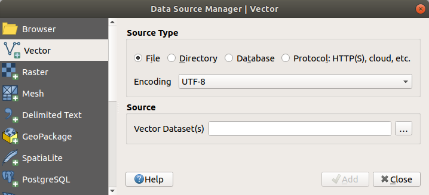
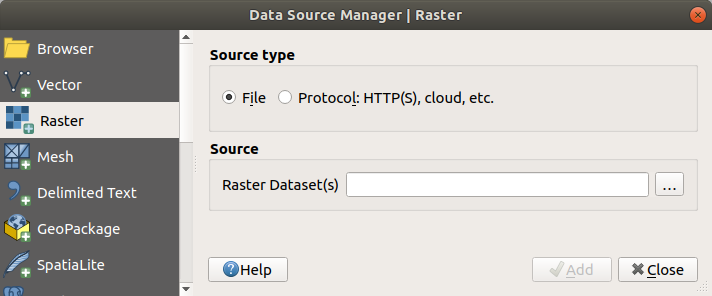

15.1. Data ဖွင့်ခြင်း (Opening Data)
Open Source Software ecosystem တစ်ခု၏ တစ်စိတ်တစ်ပိုင်းဖြစ်သည့်အားလျော်စွာ QGIS ကို formats အများစုအား ရေးသားရန်နှင့် ဖတ်ရှုရန် စွမ်းဆောင်ရည်များ (capabilities) ကို ပံ့ပိုးပေးသည့် ၎င်း၏ ကိုယ်ပိုင် providers (GIS addressing နှင့် mapping အတွက် data ကို ဖန်တီးရန်နှင့်စီမံခန့်ခွဲသည့် တစ်ဦးတစ်ယောက်၊ အဖွဲ့အစည်း သို့မဟုတ် အေဂျင်စီ) များနှင့်ပေါင်းစပ်၍ မတူညီသော libraries (ကြိုတင်စုစည်းထားသည့်ဖိုင်များ၊ ပြန်လည်အသုံးချနိုင်သည့်ဖိုင်များ၊ ပြုမူဆောင်ရွက်ချက် (function) များ ၊ script များ ၊ routine များနှင့် အခြားသောရင်းမြစ်များ စုစည်းထားသည့်နေရာ) များအပေါ်တွင် တည်ဆောက်ထားပါသည်။
Vector data formats များတွင် GeoPackage ၊ GML ၊ GeoJSON ၊ GPX ၊ KML ၊ Comma Separated Values ၊ ESRI formats (Shapefile, Geodatabase…)၊ MapInfo နှင့် MicroStation file formats ၊ AutoCAD DWG/DXF ၊ GRASS နှင့် နောက်ထပ်အခြားသော format များပါဝင်ပါသည်။ supported vector formats စာရင်းအပြည့်အစုံကို ဖတ်ရှုပါ။
Raster data formats များတွင် GeoTIFF ၊ JPEG ၊ ASCII Gridded XYZ ၊ MBTiles ၊ R or Idrisi rasters ၊ GDAL Virtual ၊ SRTM ၊ Sentinel Data ၊ ERDAS IMAGINE ၊ ArcInfo Binary Grid ၊ ArcInfo ASCII Grid နှင့် နောက်ထပ်အခြားသော format များပါဝင်ပါသည်။ supported vector formats စာရင်းအပြည့်အစုံကို ဖတ်ရှုပါ။
Database formats များတွင် PostgreSQL/PostGIS ၊ SQLite/SpatiaLite ၊ Oracle ၊ MS SQL Server ၊ SAP HANA ၊ MySQL… တို့ပါဝင်ပါသည်။
Web map နှင့် data services (WM(T)S ၊ WFS ၊ WCS ၊ CSW ၊ XYZ tiles ၊ ArcGIS services ၊ …) များကိုလည်း QGIS providers များမှ ကိုင်တွယ်ဆောင်ရွက်နိုင်ပါသည်။ ဤထဲမှအချို့၏ နောက်ထပ်အချက်အလက်များအတွက် OGC / ISO protocol များဖြင့် အလုပ်လုပ်ခြင်း ကို ကြည့်ရှုပါ။
Archived folder (မှတ်တမ်းအဖြစ်သိမ်းဆည်းထားသော folder များ) များမှ supported files (ပံ့ပိုးသည့်ဖိုင်များ) ကို ဖတ်ရှုနိုင်ပြီး QML files (QML - QGIS Style File Format) နှင့် virtual layers (advanced query တစ်ခု၏ရလဒ်အဖြစ် layer တစ်ခုကို သတ်မှတ်ရန်ခွင့်ပြုသည့် အထူး vector layer အမျိုးအစားတစ်ခု) နှင့် memory layers (memory layer တစ်ခုသည် အခြားသော vector layer ကဲ့သို့ပင်ဖြစ်သော်လည်း ၎င်းသည် disk အပေါ်တွင်မရှိဘဲ QGIS ကိုထွက်လိုက်သည်နှင့် ပျောက်ကွယ်သွားမည်ဖြစ်ပါသည်။) ကဲ့သို့သော QGIS native formats (QGIS ၏ မူလ format များ) များကို အသုံးပြုနိုင်ပါသည်။
Vector format (၈၀) ကျော် နှင့် raster format (၁၄၀) ကျော်ကို GDAL နှင့် QGIS native providers (QGIS ၏ မူလပံ့ပိုးသူများ) များမှပံ့ပိုးပေးထားပါသည်။
Note
စာရင်းပြုစုထားသည့် format များအားလုံးတိုင်း အကြောင်းအမျိုးမျိုးကြောင့် QGIS တွင် အလုပ်လုပ်နိုင်မည်မဟုတ်ပါ။ ဥပမာ - အချို့သည် ပြင်ပ proprietary libraries (stockholding proprietors နှင့် subscribers မှ ပံ့ပိုးပေးလေ့ရှိသော library) များလိုအပ်မည်ဖြစ်ပြီး သို့မဟုတ် အချို့သည် သင်အသုံးပြုလိုသော format ကို ပံ့ပိုးရန် သင့်ကွန်ပျူတာ OS တွင် GDAL/OGR ထည့်သွင်းတည်ဆောက်မှု (installation) မရှိပါက ၎င်းကို ထည့်သွင်းရန် လိုအပ်ပါသည်။ ရရှိနိုင်သည့် formats စာရင်းများကို ကြည့်ရန် command line ogrinfo --formats (vector အတွက်) နှင့် gdalinfo --formats (raster အတွက်) ကို run (ဆောင်ရွက်) ပါ။ သို့မဟုတ် QGIS ထဲရှိ menu ကို check ပြုလုပ်ပါ။
QGIS တွင် data format အလိုက် dataset တစ်ခုကိုဖွင့်ရန် အမျိုးမျိုးသော tools များရှိပါသည်။
၎င်းတို့ကို အဓိကအားဖြင့် menu သို့မဟုတ် Manage Layers toolbar ( menu ကို ဖွင့်ခြင်းဖြင့်) မှရရှိနိုင်ပါသည်။
သို့ရာတွင် ဤ tools များအားလုံးသည် unique dialog (သိသာထင်ရှားသည့်သီးခြားဒိုင်ယာလော့ခ်) Data Source Manager dialog တစ်ခုကိုညွှန်ပြပါသည်။ ၎င်းကို Data Source Manager Toolbar တွင် ရရှိနိုင်သည့်  Open Data Source Manager button ဖြင့် သို့မဟုတ် Ctrl+L ကို နှိပ်ခြင်းဖြင့် ဖွင့်နိုင်ပါသည်။ Data Source Manager dialog (Fig. 15.1) သည် QGIS မှ ပံ့ပိုးပေးထားသည့် web services သို့မဟုတ် database များအပြင် file-based data များကိုဖွင့်ရန် unified interface (မည်သည့် စခရင်အရွယ်အစား၊ စက်ပစ္စည်း သို့မဟုတ် orientation များအတွက် အကောင်းဆုံးသော ကြည့်ရှုမှုနှင့်ပေါင်းစည်းဆောင်ရွက်မှုကိုပံ့ပိုးရန်အတွက် တုံ့ပြန်မှုရှိသည့် web design principles ကို အသုံးပြုသည့် interface။) တစ်ခုကို ပံ့ပိုးပေးပါသည်။
Open Data Source Manager button ဖြင့် သို့မဟုတ် Ctrl+L ကို နှိပ်ခြင်းဖြင့် ဖွင့်နိုင်ပါသည်။ Data Source Manager dialog (Fig. 15.1) သည် QGIS မှ ပံ့ပိုးပေးထားသည့် web services သို့မဟုတ် database များအပြင် file-based data များကိုဖွင့်ရန် unified interface (မည်သည့် စခရင်အရွယ်အစား၊ စက်ပစ္စည်း သို့မဟုတ် orientation များအတွက် အကောင်းဆုံးသော ကြည့်ရှုမှုနှင့်ပေါင်းစည်းဆောင်ရွက်မှုကိုပံ့ပိုးရန်အတွက် တုံ့ပြန်မှုရှိသည့် web design principles ကို အသုံးပြုသည့် interface။) တစ်ခုကို ပံ့ပိုးပေးပါသည်။
Fig. 15.1 QGIS Data Source စီမံခန့်ခွဲမှုဆိုင်ရာ Dialog
ဤ အဓိက entry point အပြင် ချိတ်ဆက်ထားသည့် (connected) databases များကို ဆန်းစစ်လေ့လာရန် (analyze) နှင့်ကိုင်တွယ်ဆောင်ရွက်ရန် (manipulate) အထူးစွမ်းဆောင်ရည်များ (advanced capabilities) ကိုပံ့ပိုးပေးသည့် DB Manager plugin လည်းပါရှိပါသည်။ DB Manager ၏ စွမ်းဆောင်ရည်များနှင့်ဆက်စပ်သည့် နောက်ထပ်အချက်အလက်များကို Database စီမံခန့်ခွဲရာ Plugin (DB Manager Plugin) တွေ့နိုင်ပါသည်။
အမျိုးမျိုးသော data formats များကို ဖွင့်ရန်ကူညီနိုင်သည့် အခြားသော tools များ၊ native (မူရင်း) သို့မဟုတ် third-party (သီးခြား) plugins များရှိပါသည်။
ဤအခန်းသည် data များကိုထည့်သွင်းရန်အတွက် QGIS မှ ပုံမှန်(default) ပံ့ပိုးထားသည့် tools များကိုသာ ဖော်ပြသွားမည်ဖြစ်ပါသည်။ ၎င်းသည် tab တစ်ခုချင်းစီကို ဖော်ပြခြင်းထက် Data Source Manager dialog အပေါ်တွင် အဓိကအလေးပေးသွားမည်ဖြစ်ပါသည်။ ၎င်းသည် data provider သို့မဟုတ် format specificities (format သတ်မှတ်ချက်များ) အပေါ်တွင် အခြေခံသည့် tool များကို ဖော်ထုတ်လေ့လာသွားမည်ဖြစ်ပါသည်။
15.1.1. ဒေတာများရှာဖွေကြည့်ရှုနိုင်သည့်နေရာ (The Browser panel)
Browser သည် projects များထဲသို့ data များကို လွယ်ကူလျှင်မြန်စွာထည့်သွင်းနိုင်သည့် အဓိကနည်းလမ်းများထဲမှ တစ်ခုဖြစ်ပါသည်။ ၎င်းကို ဖော်ပြအတိုင်းရရှိနိုင်ပါသည်-
Data Source Manager tab တစ်ခု အဖြစ်၊
Open Data Source Manager button (Ctrl+L) ကို နှိပ်ခြင်းဖြင့် ဆောင်ရွက်နိုင်ပါသည်။menu (သို့မဟုတ်
 ) မှ သို့မဟုတ် Ctrl+2 ကို နှိပ်ခြင်းဖြင့် ဖွင့်နိုင်သည့် QGIS panel တစ်ခုအဖြစ်။
) မှ သို့မဟုတ် Ctrl+2 ကို နှိပ်ခြင်းဖြင့် ဖွင့်နိုင်သည့် QGIS panel တစ်ခုအဖြစ်။
ကိစ္စရပ်နှစ်ခုလုံးတွင် Browser သည် layer ၏ အမျိုးအစား (raster ၊ vector ၊ table(ဇယား)) သို့မဟုတ် datasource format (plain သို့မဟုတ် compressed files ၊ databases ၊ web services) နှင့်မသက်ဆိုင်ဘဲ ဖိုင်စနစ်ထဲတွင် navigate (တည်နေရာနှင့်တစ်နေရာမှတစ်နေရာသို့ သွားလာသည့်လမ်းကြောင်းများကို ထိန်းချုပ်ကိုင်တွယ်ခြင်း) ပြုလုပ်ခြင်းနှင့် geodata (GIS ဖြင့်အသုံးပြုနိုင်သည့် format တစ်ခုထဲတွင် သိမ်းဆည်းထားသော ပထဝီဝင်ဆိုင်ရာတည်နေရာများနှင့်စပ်လျဉ်းသည့် အချက်အလက်) အား စီမံခန့်ခွဲခြင်းကို ကူညီပါသည်။
15.1.1.1. Browser ၏အစိတ်အပိုင်းများကိုလေ့လာခြင်း (Exploring the Interface)
Browser panel ၏ ထိပ်ဘက်တွင် ဖော်ပြပါတို့ကို ဆောင်ရွက်ရန် ကူညီနိုင်သည့် buttons (ခလုတ်များ) အချို့ကို တွေ့နိုင်ပါသည်-
Add Selected Layers - Layer ၏ context menu (အသုံးပြုသူများမှ ဆောင်ရွက်လိုသည့် လုပ်ဆောင်ချက်များအတွက် shortcuts များပံ့ပိုးပေးထားသည့် pop-up menu တစ်ခု) မှ Add selected layer(s) ကို ရွေးချယ်ခြင်းဖြင့် data ကို map canvas (မြေပုံရေးဆွဲမည့်နေရာ) ထဲသို့ ထည့်သွင်းနိုင်ပါသည်။
 Refresh - browser tree ကို refresh ပြုလုပ်ပါသည်။
Refresh - browser tree ကို refresh ပြုလုပ်ပါသည်။သီးသန့် data (specific data) များကို ရှာဖွေရန်
 Filter Browser။ ရှာဖွေမည့်စကားလုံး သို့မဟုတ် wildcards (
Filter Browser။ ရှာဖွေမည့်စကားလုံး သို့မဟုတ် wildcards (?နှင့်/သို့မဟုတ်*ကာရိုက်တာများ (characters)) များကို ထည့်သွင်းပါ။ Browser သည် အခြား data သို့မဟုတ် folders များကို ပြသသွားမည်မဟုတ်ဘဲ DB tables များ ၊ ဖိုင်အမည်များ သို့မဟုတ် folders များ နှင့်ကိုက်ညီမှုရှိသည့် လမ်းကြောင်းများ (paths) ကိုသာပြသရန် tree ကို စစ်ထုတ်သွားမည်ဖြစ်ပါသည်။ Fig. 15.2 ထဲရှိ Browser Panel(2) နမူနာကို ကြည့်ရှုပါ။ နှိုင်းယှဉ်မှု (comparison) သည် case-sensitive (စာလုံးအကြီးအသေးအတိုင်း အတိအကျဖြစ်မှု) ဖြစ်ကောင်းဖြစ်နိုင်သည် သို့မဟုတ် မဖြစ်နိုင်ပါ။ ၎င်းကိုဖော်ပြပါအတိုင်း သတ်မှတ်နိုင်ပါသည်- * Normal - ရှာဖွေသည့်စာသား (search text) ပါဝင်သည့် items များကိုပြသသည်။ * Wildcard(s) - ရှာဖွေသည့်စာသား၏ တည်နေရာကို သတ်မှတ်ရန်?နှင့်/သို့မဟုတ်*ကာရိုက်တာများ (characters)ကို အသုံးပြု၍ ရှာဖွေမှုကိုချောမွေ့စေသည်။ * Regular expression Collapse All - Tree တစ်ခုလုံးကို Collapse (စုစည်း) ပြုလုပ်ခြင်း
Collapse All - Tree တစ်ခုလုံးကို Collapse (စုစည်း) ပြုလုပ်ခြင်း Enable/disable properties widget - ဖွင့်ထားသည့်အခါတွင် select ပြုလုပ်ထားသည့် item အတွက် metadata (အခြားသော data ၏ အချက်အလက်များကို ဖော်ပြသည့် data အစုအဝေး) များ ရှိနေပါက ၎င်းတို့ကို ဖော်ပြထားသော widget အသစ်တစ်ခုကို panel ၏ အောက်ခြေတွင် ထည့်သွင်းသွားမည်ဖြစ်ပါသည်။
Enable/disable properties widget - ဖွင့်ထားသည့်အခါတွင် select ပြုလုပ်ထားသည့် item အတွက် metadata (အခြားသော data ၏ အချက်အလက်များကို ဖော်ပြသည့် data အစုအဝေး) များ ရှိနေပါက ၎င်းတို့ကို ဖော်ပြထားသော widget အသစ်တစ်ခုကို panel ၏ အောက်ခြေတွင် ထည့်သွင်းသွားမည်ဖြစ်ပါသည်။
Browser panel ထဲရှိ entries များကို အဆင့်အတန်းအလိုက် (hierarchically) ဖွဲ့စည်းထားပြီး top level (ထိပ်ပိုင်းအဆင့်) entries များစွာရှိပါသည်-
Favorites - မကြာခဏအသုံးပြုသည့် locations (တည်နေရာများ) အတွက် shortcuts များကို ဤနေရာမှတဆင့် ထည့်သွင်းနိုင်ပါသည်။
Spatial Bookmarks - မကြာခဏ အသုံးပြုသည့် map extents (မြေပုံအတိုင်းအတာနယ်ပယ်) များကို သိမ်းဆည်းနိုင်သည့်နေရာဖြစ်ပါသည်။ (Bookmarking extents on the map (Map ပေါ်တွင် နယ်ပယ်အတိုင်းအတာပမာဏများကို bookmark ပြုလုပ်ခြင်း) တွင် ကြည့်ပါ)
Project Home - Project နှင့်သက်ဆိုင်သည့် data (အများစု) ကိုသိမ်းဆည်းထားသည့် folder တစ်ခုကို လျင်မြန်စွာ access (ရယူသုံးစွဲ) ရရှိရန်အတွက်ဖြစ်ပါသည်။ ပုံမှန်တန်ဖိုး (default value) သည် project file တည်ရှိသည့် directory (လမ်းညွှန်) ဖြစ်ပါသည်။
ဖိုင်စနစ်ထဲရှိ Home directory နှင့် filesystem root directory (hierarchy တစ်ခုထဲရှိ first or top-most directory)
ချိတ်ဆက်ထားသည့် Local သို့မဟုတ် network drives များ။
ထို့နောက် ပလက်ဖောင်း (platform) နှင့် underlying libraries (ရင်းခံ libraries) များအပေါ်မူတည်၍ number of container (နိုင်ငံတကာတွင် ကွန်တိန်နာများကို ခွဲခြားသတ်မှတ်ရန်အတွက် အသုံးပြုသည့် ဂဏန်းခုနစ်လုံးနှင့် စာလုံးလေးလုံးတို့၏ သီးသန့် အယ်လ်ဖာဂဏန်းများ ပေါင်းစပ်မှု)/ database အမျိုးအစားများ နှင့် service protocols (ဝန်ဆောင်မှုဆိုင်ရာကျင့်ဝတ်) များ ပါရှိပါသည်-


{kind=link}
{kind=link}
15.1.1.2. Browser items များနှင့်အပြန်အလှန် လုပ်ကိုင်ဆောင်ရွက်ခြင်း (Interacting with the Browser items)
Browser သည် browser မှ canvas အတွင်း နှင့် Layers panel အတွင်းသို့ ၊ Layers panel မှ browser ထဲရှိ layer containers (ဥပမာ- GeoPackage) များသို့နှင့် browser အတွင်းသို့ drag and drop (ဖိဆွဲ၍နေရာချခြင်း) ကို ပံ့ပိုးပေးပါသည်။
Browser ထဲရှိ Project file items များကို အဆိုပါ project အတွင်းတွင် ပါရှိသည့် layer tree (groups များအပါအဝင်) ကို အပြည့်ပြသခြင်းနှင့်အတူ ချဲ့ထွင် (expand) နိုင်ပါသည်။ ၎င်းတို့ကို browser ထဲတွင် drag and drop (ဖိဆွဲ၍နေရာချခြင်း) (ဥပမာ- layer item တစ်ခုကို geopackage file တစ်ခုသို့ ကော်ပီကူးယူရန်) ပြုလုပ်နိုင်ရန် သို့မဟုတ် ၎င်းတို့ကို လက်ရှိ project ထဲသို့ drag and drop (ဖိဆွဲ၍နေရာချခြင်း) သို့မဟုတ် double click မှတဆင့် ထည့်သွင်းရန် project items များကို browser ထဲရှိ အခြားသော items များကဲ့သို့ပင် တူညီစွာလုပ်ဆောင်ပေးပါသည်။
Browser panel ထဲရှိ element (တစ်စုံတစ်ခု၏ အရေးပါသည့်အစိတ်အပိုင်း သို့မဟုတ် ဝိသေသလက္ခဏာ) တစ်ခု၏ context menu ကို ၎င်းအပေါ်တွင် right-clicking ပြုလုပ်ခြင်းဖြင့် ဖွင့်နိုင်ပါသည်။
File system directory entries များအတွက် context menu သည် အောက်ပါတို့ကို ပံ့ပိုးပေးပါသည်-
Select ပြုလုပ်ထားသည့် entry ထဲတွင် အောက်ပါတို့ကို ဖန်တီးရန်- * Directory… * GeoPackage… * ShapeFile…
Add as a Favorite`(Favourite တစ်ခုအဖြစ်ပေါင်းထည့်ခြင်း) - စိတ်ကြိုက် folders (favorite folders) များကို (:guilabel:`Rename favorite…) အမည်ပြန်လည်ပြင်ဆင်နိုင်ပါသည်။ သို့မဟုတ် မည့်သည့်အချိန်တွင်မဆို (Remove favorite) ဖယ်ရှားနိုင်ပါသည်။
Hide from Browser (Browser မှ ဖျောက်ထားခြင်း) - ဖျောက်ထားသည့် folders များကို မြင်တွေ့နိုင်အောင် setting တွင် အဖွင့်အပိတ်ပြုလုပ်နိုင်ပါသည်။
Fast Scan this Directory (Directory ကို အမြန် scan လုပ်ခြင်း)
Open Directory (Directory ကို ဖွင့်ခြင်း)
Open in Terminal (Terminal အတွင်း ဖွင့်ခြင်း)
Properties… (ဂုဏ်သတ္တိများ)
Directory Properties… (Directory ဆိုင်ရာ ဂုဏ်သတ္တိများ)
Project ထဲတွင် layer များအဖြစ် ဆောင်ရွက်နိုင်သည့် leaf entries များအတွက် context menu တွင် supporting entries (ပံ့ပိုးပေးထားသည့် entries) များပါရှိမည်ဖြစ်ပါသည်။ ဥပမာ - non-database ၊ non-service-based vector ၊ raster နှင့် mesh data sources များအတွက်- * (Layer ကို file အဖြစ်သို့ export လုပ်ခြင်း) * Add Layer to Project (Project အတွင်းသို့ layer ထည့်သွင်းခြင်း) * Layer Properties (Layer ၏ ဂုဏ်သတ္တိများ) * သို့မဟုတ် Delete “<name of file>”… (File နာမည်များ အမည်ပြောင်းခြင်း သို့မဟုတ် ဖျက်ပစ်ခြင်း) * Show in Files (Files တွင် ပြသခြင်း) * File Properties (Files ၏ ဂုဏ်သတ္တိများ)
Layer properties entry ထဲတွင် အောက်ပါတို့ကို ရှာဖွေတွေ့ရှိနိုင်ပါသည် (Project ထဲသို့ layer များကို ထည့်သွင်းသည်နှင့်တစ်ပြိုင်နက် vector နှင့် raster layer properties များထဲတွင် တွေ့မြင်ရသည့်အရာများနှင့်ဆင်တူသည့်) -
Layer အတွက် Metadata။ Metadata အုပ်စုများ - Information from provider (အကယ်၍ ဖြစ်နိုင်ပါက Path သည် အဆိုပါ ရင်းမြစ် (source) အတွက် hyperlink တစ်ခုဖြစ်မည်ဖြစ်ပါသည်)၊ Identification ၊ Extent ၊ Access ၊ Fields (vector layer များအတွက်) ၊ Bands (raster layer များအတွက်) ၊ Contacts ၊ Links (vector layer များအတွက်) ၊ References (raster layer များအတွက်) ၊ History ။
Preview panel တစ်ခု
Vector sources (Attributes panel ထဲတွင် ) များအတွက် attribute table
Browser ကို အသုံးပြု၍ project ထဲသို့ layer တစ်ခုကို ထည့်သွင်းရန် -
အထက်တွင်ဖော်ပြထားသည့်အတိုင်း Browser ကို ဖွင့်ပါ။ File system ၊ databases နှင့် web services များနှင့်အတူ browser tree တစ်ခုကို ပြသမည်ဖြစ်ပါသည်။ ၎င်းတို့မပေါ်လာခင်တွင် databases များနှင့် web services များကို ချိတ်ဆက်ထားရန်လိုအပ်မည်ဖြစ်ပါသည်။ (သီးသန့်ကဏ္ဍများတွင်ကြည့်ပါ)
စာရင်းထဲတွင် layer ကို ရှာဖွေပါ။
Context menu ကိုအသုံးပြုပါ။ ၎င်း၏အမည်ကို double-click နှိပ်ပါ။ သို့မဟုတ် map canvas ထဲသို့ drag-and-drop ပြုလုပ်ပါ။ Layer ကို လက်ရှိတွင် Layers panel ထဲသို့ ထည့်သွင်းသွားမည်ဖြစ်ပြီး map canvas (မြေပုံရေးဆွဲသည့်နေရာ) အပေါ်တွင်ကြည့်ရှုနိုင်ပါသည်။
Tip
QGIS project တစ်ခုကို browser မှ တိုက်ရိုက်ဖွင့်ပါ
QGIS project တစ်ခုကို ၎င်း၏အမည်အပေါ်တွင် double-clicking နှိပ်ခြင်း သို့မဟုတ် map canvas ထဲသို့ drag-and-drop ပြုလုပ်ခြင်းဖြင့် browser မှ တိုက်ရိုက်ဖွင့်နိုင်ပါသည်။
File တစ်ခုကို ထည့်သွင်းလိုက်သည်နှင့်တစ်ပြိုင်နက် map navigation tools (မြေပုံ၏တည်နေရာနှင့် လမ်းကြောင်းများကို ထိန်းချုပ်သည့် ကိရိယာများ) များကို အသုံးပြု၍ ၎င်းနှင့်အနီးတဝိုက်ကို zoom (ချုံ့ခြင်း/ချဲ့ခြင်း) ပြုလုပ်နိုင်ပါသည်။ Layer တစ်ခု၏ style ကို ပြောင်းလဲပြင်ဆင်မှုများပြုလုပ်ရန် context menu မှ ကို ရွေးချယ်ပြီး layer ၏ အမည်အပေါ်တွင် double-clicking နှိပ်ခြင်း သို့မဟုတ် legend (ရည်ညွှန်းချက်) ထဲရှိ အမည်ကို right-clicking ပြုလုပ်ခြင်းဖြင့် Layer Properties dialog ကို ဖွင့်ပါ။ Vector layer များအတွက် သင်္ကေတများသတ်မှတ်ခြင်းနှင့်သက်ဆိုင်သည့် နောက်ထပ်အချက်အလက်များအတွက် သင်္ကေတ ဂုဏ်သတ္တိများ (Symbology Properties) section ကို ကြည့်ပါ။
Browser ထဲရှိ item တစ်ခုကို right-clicking ပြုလုပ်ခြင်းသည် အောက်ပါတို့ကို ကူညီမည်ဖြစ်ပါသည်-
ဖိုင်တစ်ခု သို့မဟုတ် table (ဇယား) တစ်ခုအတွက်။ ၎င်း၏ metadata ကို ပြသပေးခြင်း သို့မဟုတ် ၎င်းကို project ထဲတွင်ဖွင့်ခြင်း လုပ်ဆောင်နိုင်ပါသည်။ Table များကို အမည်ပြန်လည်ပြင်ဆင်ခြင်း၊ ဖျက်ခြင်း သို့မဟုတ် ဖြတ်တောက်ခြင်း (truncated) ပြုလုပ်နိုင်သည်။
Folder တစ်ခုအတွက် ၎င်းကို စိတ်ကြိုက်များ (favourites) ထဲတွင် bookmark (အမှတ်အသား) ပြုလုပ်ခြင်း သို့မဟုတ် browser tree ထဲမှ ၎င်းကိုဖျောက်ထားခြင်း လုပ်ဆောင်နိုင်ပါသည်။ မမြင်အောင်ဖျောက်ထားသည့် folders များကို tab မှ စီမံခန့်ခွဲနိုင်ပါသည်။
spatial bookmarks ကိုစီမံခန့်ခွဲခြင်း - bookmarks များကို
XMLfiles များအဖြစ်သို့ ဖန်တီးပေးခြင်း၊ export နှင့် import ပြုလုပ်ခြင်းများ လုပ်ဆောင်ပေးနိုင်ပါသည်။Database တစ်ခု သို့မဟုတ် web service တစ်ခုသို့ ချိတ်ဆက်ရန် ချိတ်ဆက်မှု (connection) တစ်ခုဖန်တီးပေးပါသည်။
Schema (အစီအစဉ်တစ်ခု သို့မဟုတ် သီအိုရီတစ်ခုကို မော်ဒယ်တစ်ခုသို့မဟုတ် outline တစ်ခုအဖြစ်ကိုယ်စားပြုဖော်ပြချက်) တစ်ခုကို ပြန်လည်ဆန်းသစ်ခြင်း (refresh) ပြုလုပ်ခြင်း၊ အမည်ပြန်လည်ပေးခြင်း သို့မဟုတ် ဖျက်ပစ်ခြင်းများ လုပ်ဆောင်ပေးနိုင်ပါသည်။
File များကို databases ထဲသို့ import ပြုလုပ်ခြင်း သို့မဟုတ် schema/database တစ်ခုမှ အခြားတစ်ခုသို့ ရိုးရှင်းသည့် drag-and-drop ပြုလုပ်ခြင်းဖြင့် ဇယားများကို ကူးယူခြင်းများဆောင်ရွက်နိုင်သည်။ ဖိ၍ဆွဲနေစဉ် (dragging) အတွင်း ကြာရှည်သည့် scrolling ပြုလုပ်ခြင်းကို ရှောင်ရှားရန် ဒုတိယ browser panel တစ်ခုရှိပါသည်။ File ကို select ပြုလုပ်ပြီး panel တစ်ခုမှ အခြားတစ်ခုသို့ drag-and-drop ပြုလုပ်ရုံသာဖြစ်ပါသည်။

Fig. 15.2 ဘေးချင်းကပ်လျက်ရှိသည့် QGIS Browser panel များ
Tip
** OS file browser မှ ရိုးရှင်းသည့် drag-and-drop ပြုလုပ်ခြင်းဖြင့် QGIS ထဲသို့ layers များကို ထည့်သွင်းပါ**
Operating system file browser မှ :guilabel: Layers Panel ထဲသို့ သို့မဟုတ် map canvas ထဲသို့ drag-and-drop ပြုလုပ်ပြီး ဖိုင်(များ)ကို project ထဲသို့ ထည့်သွင်းနိုင်ပါသည်။
15.1.2. Database များစီမံခန့်ခွဲရာ (The DB Manager)
DB Manager plugin သည် QGIS (PostGIS ၊ SpatiaLite ၊ GeoPackage ၊ Oracle Spatial ၊ MS SQL Server ၊ Virtual layers) မှ ပံ့ပိုးထားသည့် spatial database format များကို ပေါင်းစပ်မှုများပြုလုပ်ခြင်း (integrating) နှင့် စီမံခန့်ခွဲခြင်း (managing) များပြုလုပ်ခြင်းတို့အတွက် အခြား tool တစ်ခုဖြစ်ပါသည်။ ၎င်းကို menu မှတဆင့် အသက်ဝင်လာအောင် (activate) ဆောင်ရွက်နိုင်ပါသည်။
 DB Manager plugin သည် ဖော်ပြပါ features (တစ်စုံတစ်ခု၏ ထူးခြားသော အရည်အချင်း သို့မဟုတ် အသွင်အပြင်တစ်ခု) အမျိုးမျိုးကို ပံ့ပိုးပေးထားပါသည်-
DB Manager plugin သည် ဖော်ပြပါ features (တစ်စုံတစ်ခု၏ ထူးခြားသော အရည်အချင်း သို့မဟုတ် အသွင်အပြင်တစ်ခု) အမျိုးမျိုးကို ပံ့ပိုးပေးထားပါသည်-
Database များနှင့်ချိတ်ဆက်ပြီး ၎င်းတို့၏ဖွဲ့စည်းတည်ဆောက်ထားရှိမှုပုံစံ (structure) နှင့် ပါဝင်သည့်အကြောင်းအရာများ (contents) ကို ပြသသည်။
Database များ၏ table များကို ကြိုတင်ကြည့်ရှုခြင်း (preview) လုပ်ဆောင်နိုင်သည်။
Double-clicking ပြုလုပ်ခြင်း သို့မဟုတ် drag-and-drop ပြုလုပ်ခြင်းဖြင့် map canvas ထဲသို့ layer များကို ထည့်သွင်းနိုင်သည်။
QGIS Browser သို့မဟုတ် အခြားသော database မှ database တစ်ခုထဲသို့ layer များကို ထည့်သွင်းနိုင်သည်။
SQL queries များကို ဖန်တီးပြီး ၎င်းတို့၏ ထွက်ရှိလာသည့် output ကို map canvas ထဲသို့ထည့်သွင်းနိုင်သည်။
virtual layer များကိုဖန်တီးနိုင်သည်။
DB Manager ၏ စွမ်းဆောင်ရည် (DB Manager capabilities) များနှင့်သက်ဆိုင်သည့် နောက်ထပ်အချက်အလက်များကို Database စီမံခန့်ခွဲရာ Plugin (DB Manager Plugin) ထဲတွင် ရှာဖွေတွေ့ရှိနိုင်ပါသည်။
Fig. 15.3 DB Manager dialog
15.1.3. Provider နှင့်ဆိုင်သည့်ကိရိယာများ (Provider-based loading tools)
Layers များ ထည့်သွင်းရန် QGIS မှ ပံ့ပိုးထားသည့် အဓိက tools များဖြစ်သော Browser Panel နှင့် DB Manager များအပြင် data provider များနှင့်သက်ဆိုင်သည့် သီးခြား tools များကိုလည်း ရှာဖွေ့တွေ့ရှိနိုင်ပါသည်။
Note
External plugins အချို့သည်လည်း QGIS ထဲတွင် သီးသန့် (specific) format files များကို ဖွင့်ရန် tools များကို ပံ့ပိုးပေးထားပါသည်။
15.1.3.1. ဖိုင်တစ်ခုမှ layer တစ်ခုကို ထည့်သွင်းခြင်း (Loading a layer from a file)
ဖိုင်တစ်ခုမှ layer တစ်ခုကို ထည့်သွင်းရန်-
Data Source Manager dialog ထဲရှိ layer type tab ကိုဖွင့်ပါ။ ဆိုလိုသည်မှာ
Open Data Source Manager button (သို့မဟုတ် Ctrl+L ကိုနှိပ်ပါ) ကို click နှိပ်ပြီး target tab ကို ဖွင့်ပါ။ သို့မဟုတ်-Vector data အတွက် (ဥပမာ- GML ၊ ESRI Shapefile ၊ Mapinfo and DXF layers) - Ctrl+Shift+V ကိုနှိပ်ပါ။
 Add Vector Layer menu option ကို select ပြုလုပ်ပါ။ သို့မဟုတ် Add Vector Layer toolbar button ကို click နှိပ်ပါ။
Add Vector Layer menu option ကို select ပြုလုပ်ပါ။ သို့မဟုတ် Add Vector Layer toolbar button ကို click နှိပ်ပါ။ Fig. 15.4 Vector Layer Dialog ထည့်သွင်းခြင်း
Raster data အတွက် (ဥပမာ- GeoTiff ၊ MBTiles ၊ GRIdded Binary နှင့် DWG layers)- Ctrl+Shift+R ကိုနှိပ်ပါ။ menu option ကို select ပြုလုပ်ပါ။ သို့မဟုတ်
 Add Raster Layer toolbar button ကို click နှိပ်ပါ။
Add Raster Layer toolbar button ကို click နှိပ်ပါ။ Fig. 15.5 Raster Layer Dialog ထည့်သွင်းခြင်း
 File source type ကို အမှန်ခြစ်ပါ။
File source type ကို အမှန်ခြစ်ပါ။… Browse button အပေါ်တွင် Click နှိပ်ပါ။
File system ကို navigate (လမ်းညွှန်မှု) ပြုလုပ်ပြီး supported data source (ပံ့ပိုးပေးထားသည့် ဒေတာရင်းမြစ်) တစ်ခုကို ထည့်သွင်းပါ။ တစ်ချိန်တည်းတွင် တစ်ခုထက်ပိုသော layer များကို Ctrl key ကိုဖိထား၍ dialog ထဲရှိ multiple items များအပေါ်တွင် ကလစ်နှိပ်ခြင်းဖြင့်ဖြစ်စေ သို့မဟုတ် range (အပိုင်းအခြား) ထဲရှိ ပထမဆုံးနှင့်နောက်ဆုံး items များကို ကလစ်နှိပ်ထားပြီး items များ၏ range ကို ပြုလုပ်ရန်အတွက် Shift key ကို ဖိထားခြင်းဖြင့်ဖြစ်စေ ထည့်သွင်းနိုင်ပါသည်။ ကောင်းစွာစမ်းသပ်ခြင်းခံထားရသည့် format များသာ formats filter တွင် ပေါ်လာမည်ဖြစ်ပါသည်။ အခြားသော format များအား
All files(pull-down menu ထဲရှိ ထိပ်ဆုံး item) ကို select ပြုလုပ်ခြင်းဖြင့် ထည့်သွင်းနိုင်ပါသည်။Data Source Manager dialog ထဲသို့ select ပြုလုပ်ထားသည့် ဖိုင်ကို ထည့်သွင်းရန် Open ကိုနှိပ်ပါ။

Fig. 15.6 Open options (ဖွင့်ရန်နည်းလမ်းများ) များနှင့်အတူ Shapefile တစ်ခုကိုထည့်သွင်းခြင်း
QGIS ထဲတွင် ဖိုင်ကို ထည့်ရန်နှင့် ၎င်းတို့ကို map view (မြေပုံမြင်ကွင်း) ထဲတွင် ပြသရန် Add ကို နှိပ်ပါ။ Fig. 15.7 သည်
alaska.shpfile ကို ထည့်သွင်းပြီးနောက် QGIS ကို ပြသပါသည်။Fig. 15.7 Alaska ၏ Shapefile ထည့်သွင်းထားသည့် QGIS
Note
Vector နှင့် raster ဖိုင်များကို ထည့်သွင်းရန်အတွက် GDAL driver သည် open options (ဖွင့်ရန်နည်းလမ်းများ) များကို သတ်မှတ်ရန် လုပ်ဆောင်ပေးပါသည်။ ၎င်းကို ဖိုင်တစ်ခု select ပြုလုပ်ပြီးသည့်အခါတွင် ပြသမည်ဖြစ်ပါသည်။ နည်းလမ်း (Options) များကို https://gdal.org/drivers/vector/ ၊ https://gdal.org/drivers/raster တွင် အသေးစိတ်ဖော်ပြထားပြီး အကယ်၍ QGIS ထဲတွင် ဖိုင်တစ်ခုသည် select ပြုလုပ်ခြင်းခံရပါက hyperlink ပါဝင်သည့် စာသားတစ်ခုသည် select ပြုလုပ်ခြင်းခံရသည့် ဖိုင်အမျိုးအစား၏ documentation (မှတ်တမ်းမှတ်ရာ) ဆီသို့ တိုက်ရိုက်ရောက်ရှိသွားစေမည်ဖြစ်ပါသည်။
Note
MapInfo (ဥပမာ- .tab) သို့မဟုတ် Autocad (.dxf) ကဲ့သို့သော အချို့ format များသည် မတူညီသည့် geometry အမျိုးအစားများကို ဖိုင်တစ်ခု (single file) တွင် ပေါင်းစပ်ခြင်း (mixing) ကို ခွင့်ပြုသောကြောင့် အဆိုပါ datasets များကို ထည့်သွင်းခြင်းသည် layer တစ်ခုစီအလိုက် geometry တစ်ခုရရှိစေရန်အလို့ငှာ အသုံးပြုမည့် geometries များကို select ပြုလုပ်ရန်အတွက် dialog တစ်ခုကို ပွင့်စေပါသည်။
Add Vector Layer နှင့် Add Raster Layer tabs များသည် File ထက် source types များမှ layers များ ထည့်သွင်းခြင်းကို ခွင့်ပြုပါသည်-
ArcInfo Binary Coverage၊UK. National Transfer Formatကဲ့သို့သော သီးသန့် vector formats အပြင်US Census Bureau၏ raw TIGER format သို့မဟုတ်OpenfileGDBများကို ထည့်သွင်းနိုင်ပါသည်။ ထိုသို့ဆောင်ရွက်ရန် Directory ကို Source type အဖြစ် select ပြုလုပ်ပါ။ ဤဖြစ်ရပ်တွင် … Browse ကို နှိပ်ပြီးနောက် dialog ထဲတွင် directory တစ်ခုကို select ပြုလုပ်နိုင်ပါသည်။- Database source အမျိုးအစား ဖြင့် လက်ရှိရှိနေသည့် database connection တစ်ခုကို select ပြုလုပ်ခြင်း သို့မဟုတ် select ပြုလုပ်ထားသည့် database အမျိုးအစားအတွက် database connection တစ်ခုကို ဖန်တီးခြင်း ဆောင်ရွက်နိုင်ပါသည်။ ဖြစ်နိုင်သည့် database အမျိုးအစားအချို့မှာ
ODBC၊Esri Personal Geodatabase၊MS SQL Serverအပြင်PostgreSQLသို့မဟုတ်MySQLတို့ဖြစ်ပါသည်။New button ကို နှိပ်ခြင်းသည် Create a New OGR Database Connection dialog ကိုပွင့်စေပြီး ၎င်း၏ သတ်မှတ်ချက် (parameters) များသည် သိမ်းထားသည့် ချိတ်ဆက်မှုတစ်ခုကိုဖန်တီးခြင်း (Creating a stored Connection) ထဲတွင် ရှာဖွေတွေ့ရှိနိုင်သည်များထဲမှ ဖြစ်ပါသည်။ Open ကို နှိပ်ခြင်းသည် ရရှိနိုင်သည့် ဇယားများမှ select ပြုလုပ်ခြင်းကိုခွင့်ပြုမည်ဖြစ်ပါသည်။ ဥပမာ- PostGIS လုပ်ဆောင်နိုင်သော databases များ။
- Protocol: HTTP(S), cloud, etc. source အမျိုးအစားသည် locally (ကွန်ပျူတာထဲတွင်သိမ်းဆည်းထားသည်) သို့မဟုတ် network တွင် သိမ်းဆည်းထားသည့် data (အများသူငှာကြည့်ရှုဝင်ရောက်ကြည့်ရှုသုံးစွဲနိုင်သည်(publicly accessible)) သို့မဟုတ် စီးပွားရေးလုပ်ငန်းသုံး cloud storage services များ၏ private buckets (Buckets များသည်ဒေတာများကို သိမ်းထားသည့် အခြေခံ containers များဖြစ်ပြီး Cloud Storage တွင် သိမ်းဆည်းသမျှအားလုံးသည် bucket တစ်ခုထဲတွင် ပါဝင်ရမည်ဖြစ်ပါသည်) များတွင် သိမ်းဆည်းထားသည့် data ကိုပွင့်စေပါသည်။ ပံ့ပိုးပေးထားသည့် protocol အမျိုးအစားများမှာ-
HTTP/HTTPS/FTP၊ URI တစ်ခုနှင့်အတူ၊ လိုအပ်ပါက authentication တစ်ခု။AWS S3၊Google Cloud Storage၊Microsoft Azure Blob၊Alibaba OSS Cloud၊Open Stack Swift Storageကဲ့သို့သော Cloud storage။ Bucket or container နှင့် Object key များဖြည့်သွင်းရန်လိုအပ်ပါသည်။CouchDBdatabase အပေါ်တွင်အခြေခံထားသည့် သို့မဟုတ်GeoJSONသို့မဟုတ်GEOJSON - Newline Delimitedformat များကိုအသုံးပြုပြီး OGCWFS 3(စမ်းသပ်ဆဲ) ကို ပံ့ပိုးပေးနေသည့် ဝန်ဆောင်မှု။ ရွေးချယ်နိုင်သော (optional) authentication နှင့်အတူ URI တစ်ခုလိုအပ်ပါသည်။Vector source အမျိုးအစားများအားလုံးအတွက် Encoding ကို သတ်မှတ်ရန် သို့မဟုတ် setting ကို အသုံးပြုရန် ဖြစ်ကောင်းဖြစ်နိုင်ပါသည်။
15.1.3.2. Mesh layer တစ်ခုကို ထည့်သွင်းခြင်း (Loading a mesh layer)
Mesh တစ်ခုဆိုသည်မှာ ယာယီ (temporal) နှင့် အခြားသော (components) အစိတ်အပိုင်းများပါရှိသည့် ဖွဲ့စည်းမှုပုံစံနည်းစနစ်တကျမရှိသောဇယားကွက် (unstructured grid) တစ်ခုဖြစ်ပါသည်။ Spatial component ထဲတွင် 2D သို့မဟုတ် 3D space ထဲရှိ vertices (မျဉ်းအဆစ်များ) ၊ edges (အစွန်များ) နှင့် faces (မျက်နှာများ) များပါရှိသည့် အစုအဝေးတစ်ခုပါဝင်ပါသည်။ Mesh layer များနှင့်သက်ဆိုင်သည့် နောက်ထပ်အချက်အလက်များကို Mesh Data များနှင့် အလုပ်လုပ်ခြင်း (Working with Mesh Data) တွင် ကြည့်ရှုနိုင်ပါသည်။
Mesh layer တစ်ခုကို QGIS ထဲသို့ထည့်သွင်းရန်-
menu မှ ၎င်းကို select ပြုလုပ်ခြင်း သို့မဟုတ်
Open Data Source Manager button ကို click ပြုလုပ်ခြင်းဖြင့် dialog ကို ဖွင့်ပါ။Left panel (ဘယ်ဘက်ဘောင်) အပေါ်ရှိ
 Mesh tab ကို ဖွင့်ပါ။
Mesh tab ကို ဖွင့်ပါ။ဖိုင်ကို select ပြုလုပ်ရန် … Browse ကို နှိပ်ပါ။ Various formats များကို ပံ့ပိုးပေးထားပါသည်။
ဖိုင်ကို select ပြုလုပ်ပြီး Add ကို နှိပ်ပါ။ Layer ကို native mesh rendering (မူရင်း mesh ပုံဖော်ခြင်း) အသုံးပြုပြီး ထည့်သွင်းသွားမည်ဖြစ်ပါသည်။
အကယ်၍ select ပြုလုပ်ထားသည့် ဖိုင်တွင် mesh layers များစွာ ပါဝင်နေပါက ထည့်သွင်းရန်အတွက် sublayer (layer အခွဲများ) များကို ရွေးချယ်ရန် dialog တစ်ခုဖြင့် သတိပေး (prompt) သွားမည်ဖြစ်ပါသည်။ ရွေးချယ်ခြင်း (selection) ကိုပြုလုပ်ပြီး OK ကိုနှိပ်ပါ။ Layers များကို native mesh rendering အသုံးပြုပြီး ထည့်သွင်းသွားမည်ဖြစ်ပါသည်။ ၎င်းတို့ကို group(အုပ်စု) တစ်ခုထဲတွင်လည်း ထည့်သွင်းရန် ဖြစ်ကောင်းဖြစ်နိုင်ပါသည်။

Fig. 15.8 Data Source Manager (ဒေတာများကိုစီမံခန့်ခွဲရာနေရာ) ထဲရှိ Mesh tab
15.1.3.3. Importing a delimited text file (Delimited text file တစ်ခုကို import ပြုလုပ်ခြင်း)
(Delimited text file ဆိုသည်မှာ ၎င်းတွင် line တစ်ခုချင်းစီသည် စာအုပ်တစ်အုပ်၊ ကုမ္ပဏီတစ်ခု သို့မဟုတ် အခြားအရာတစ်ခုကို ကိုယ်စားပြုပြီး line တစ်ခုချင်းစီတွင် delimiter ဖြင့် ပိုင်းခြားထားသော fields များပါရှိသည့် data ကိုသိမ်းဆည်းရန် အသုံးပြုသည့် စာသားဖိုင်တစ်ခု ဖြစ်ပါသည်။)
Delimited text files (ဥပမာ .txt ၊ .csv ၊ .dat ၊ .wkt) များကို အထက်တွင်ဖော်ပြထားသည့် tools (ကိရိယာတန်ဆာပလာများ) များအသုံးပြုပြီး ထည့်သွင်းနိုင်ပါသည်။ ဤနည်းအားဖြင့် ၎င်းတို့သည် ရိုးရှင်းသောဇယားများ (simple tables) အဖြစ် ပေါ်လာမည်ဖြစ်သည်။ တစ်ခါတစ်ရံတွင် delimited text files များတွင် ပုံဖော်ပြသ (visualize) လိုသည့် coordinates / geometries များ ပါဝင်နိုင်ပါသည်။ ၎င်းသည်  Add Delimited Text Layer ကို ဒီဇိုင်းရေးဆွဲထားရသည့် အချက်ပင်ဖြစ်သည်။
Add Delimited Text Layer ကို ဒီဇိုင်းရေးဆွဲထားရသည့် အချက်ပင်ဖြစ်သည်။
Data Source Manager dialog ကိုဖွင့်ရန်
Open Data Source Manager icon ကို click နှိပ်ပါ။- Delimited Text tab ကို ဖွင့်ပါ။
… Browse button ကိုနှိပ်ပြီး import ပြုလုပ်မည့် delimited text file (ဥပမာ-
qgis_sample_data/csv/elevp.csv) ကို Select ပြုလုပ်ပါ။Layer name field ထဲတွင် project ထဲရှိ layer အတွက် အသုံးပြုမည့် အမည်ကို ထည့်သွင်းပံ့ပိုးပါ။ (ဥပမာ-
Elevation)Dataset ကို တွေ့ရှိရန်နှင့် လိုအပ်ချက်များကို ဖြည့်ဆည်းရန် အောက်တွင်ပြထားသည့်အတိုင်း setting များကို ပြင်ဆင်သတ်မှတ် (Configure) ပါ။

Fig. 15.9 Delimited Text Dialog
File format (ဖိုင်ပုံစံ)
ဖိုင်ကို select ပြုလုပ်ပြီးသည်နှင့်တပြိုင်နက် QGIS သည် fields နှင့် rows များကို သတ်မှတ်ပြီး လတ်တလောတွင် အများဆုံးအသုံးပြုထားသည့် delimiter(စာသားများကို ပိုင်းခြားသည့် တစ်ခုသို့မဟုတ် တစ်ခုထက်ပိုသည့် character) ဖြင့် ဖိုင်ကို ခွဲခြမ်းစိတ်ဖြာခြင်း (parse) ပြုလုပ်ရန် ကြိုးပမ်းမည်ဖြစ်ပါသည်။ QGIS အနေဖြင့် ဖိုင်ကို တိကျမှန်ကန်စွာခွဲခြမ်းစိတ်ဖြာနိုင်ရန်အတွက် မှန်ကန်သည့် delimiter ကို select ပြုလုပ်ရန်မှာ အလွန်ပင်အရေးကြီးပါသည်။ Delimiter တစ်ခုကို အောက်ပါတို့အကြားတွင် ရွေးချယ်ခြင်းဖြင့် သတ်မှတ်နိုင်ပါသည်-
- CSV (comma separated values) comma character (,) ကို အသုံးပြုရန်။
 Regular expression delimiter နှင့် Expression field ထဲတွင် စာသား (text) ကို ထည့်သွင်းပါ။ ဥပမာ- delimiter ကို tab သို့ပြောင်းလဲရန်
Regular expression delimiter နှင့် Expression field ထဲတွင် စာသား (text) ကို ထည့်သွင်းပါ။ ဥပမာ- delimiter ကို tab သို့ပြောင်းလဲရန် \tကို (၎င်းကို tab character အတွက် ပုံမှန်ဖော်ပြချက်များ (regular expressions) တွင်အသုံးပြုပါသည်) အသုံးပြုပါ။- Custom delimiters ၊
comma၊space၊tab၊semicolon၊ …. ကဲ့သို့သော ကြိုတင်သတ်မှတ်ထားသည့် (predefined) delimiters များထဲမှ ရွေးချယ်ခြင်း
မှတ်တမ်းများ နှင့် အချက်အလက်များ (Records and fields)
Data recognition (Data recognition ဆိုသည်မှာ capture ပြုလုပ်လိုသည့် field များကို နေရာချထားပြီး ၎င်းတို့ကို character-based data များအဖြစ်သို့ပြောင်းလဲသည့်အဆင့်ဖြစ်ပါသည်) အတွက် အဆင်ပြေသည့် အခြားနည်းလမ်းများကို အသုံးပြုနိုင်ပါသည်-
Number of header lines to discard - ပထမဆုံး lines များသည် လိုင်းအလွတ်များ (blank lines) သို့မဟုတ် အခြားသော formatting များ ဖြစ်နေသည့်အတွက် Import ထဲတွင် ဖိုင်မှ ပထမဆုံး line များကို ရှောင်ရှားလိုသည့်အခါတွင် အဆင်ပြေစေပါသည်။
 First record has field names - ပထမဆုံး line ထဲရှိ တန်ဖိုးများ (values) ကို field names (field အမည်များ) များအဖြစ်သို့အသုံးပြုပါသည်။ ထိုသို့မဟုတ်ပါက QGIS သည် field အမည်များကို
First record has field names - ပထမဆုံး line ထဲရှိ တန်ဖိုးများ (values) ကို field names (field အမည်များ) များအဖြစ်သို့အသုံးပြုပါသည်။ ထိုသို့မဟုတ်ပါက QGIS သည် field အမည်များကို field_1,field_2… စသည်ဖြင့် အသုံးပြုပါသည်။- Detect field types - Field type (field အမျိုးအစား) ကို အလိုအလျောက်အသိအမှတ်ပြု (recognize) သည်။ အကယ်၍ uncheck ပြုလုပ်ထားပါက attributes အားလုံးကို text(စာသား) fields များအဖြစ် ပြုမှုဆောင်ရွက်မည်ဖြစ်သည်။
- Decimal separator is comma - Decimal separator (ဒဿမကိန်း အခွဲအခြား) ကို comma တစ်ခုဖြစ်စေရန် တွန်းအားပေးဖြစ်ပေါ်စေပါသည်။
- Trim fields - Field များမှ leading and trailing spaces (ဖိုင်တစ်ခုသို့မဟုတ် folder တစ်ခု၏ အမည်၏ အရှေ့နှင့်အနောက်ရှိ space character) များကို trim (မလိုအပ်သည်များကိုဖြတ်ထုတ်ခြင်း) ပြုလုပ်ခြင်းကိုခွင့်ပြုသည်။
- Discard empty fields (လွတ်နေသော field များကို ဖယ်ထုတ်ခြင်း)
Custom boolean literals - Boolean values (TRUE သို့မဟုတ် FALSE ဆိုသည့်တန်ဖိုးအား ကိုယ်စားပြုဖော်ပြသည့်တန်ဖိုး) များအဖြစ်တွေ့ရှိရမည်ဖြစ်သည့် စိတ်ကြိုက် string (programming အသုံးပြုသည့် ဒေတာအမျိုးအစား၊ နံပါတ်များထက် စာသားကို ကိုယ်စားပြုရန် အသုံးပြုသည်) တစ်စုံကို ထည့်သွင်းခြင်းအား ခွင့်ပြုသည်။
Field အမျိုးအစားရှာဖွေဖော်ထုတ်ခြင်း (Field type detection)
QGIS သည် ရွေးချယ်နိုင်သော sidecar (ပင်မအက်ပလီကေးရှင်းနှင့်အတူယှဉ်တွဲရှိသည့် ဝန်ဆောင်မှုများ သို့မဟုတ် လုပ်ငန်းစဉ်များ) CSVT file (GeoCSV specification တွင်ကြည့်ပါ) ၏ အကြောင်းအရာများကို စစ်ဆေး (examining) ပြီး တန်ဖိုးအားလုံးသည် မည်သည့်အမှား (errors) မျိုးမျှမပါဝင်ဘဲ အမှန်တကယ်ပြောင်းလဲခြင်းပြုလုပ်နိုင်သည်ကို သေချာစေရန် ဖိုင်တစ်ခုလုံးကို scanning ပြုလုပ်ခြင်းဖြင့် field အမျိုးအစားများကို အလိုအလျောက်ရှာဖွေဖော်ထုတ်ရန် ကြိုးပမ်းမည်ဖြစ်သည်။ (အကယ်၍ Detect field types ကို အမှန်ခြစ်ထားပါက) fall-back field (ပြန်လည်ရရှိသည့် field) အမျိုးအစားသည် စာသား (text) ဖြစ်ပါသည်။
ရှာဖွေတွေ့ရှိသည့် field အမျိုးအစား သည် sample data preview table (နမူနာ data ကို ကြိုတင်ကြည့်ရှုနိုင်သည့်ဇယား) ထဲရှိ field အမည်အောက်တွင် ပေါ်လာမည်ဖြစ်ပြီး လိုအပ်ပါက ကိုယ်တိုင် (manually) ဖြင့် ပြောင်းလဲပြင်ဆင်မှုများပြုလုပ်နိုင်ပါသည်။
အောက်ဖော်ပြပါ field အမျိုးအစားများကို ပံ့ပိုးပေးထားပါသည်-
Boolean- Boolean values (boolean တန်ဖိုးများ) အဖြစ်သို့ အဓိပ္ပာယ်ဖွင့်ဆိုထားသည့် case-insensitive (စာလုံးအကြီးအသေးအတိုင်း အတိအကျဖြစ်ရန်မလိုသော) literal couples (case-insensitive literal couples များအား code များကို ဖတ်ရှုရန်နှင့်စီမံခန့်ခွဲရာတွင်ပိုမိုအဆင်ပြေစေရန် programming languages များတွင် အသုံးပြုလေ့ရှိပါသည်။) များမှာ1/0၊true/false၊t/f၊yes/noတို့ဖြစ်ပါသည်။Whole Number (integer)(ကိန်းပြည့်)Whole Number (integer - 64 bit)(ကိန်းပြည့် - 64 bit)Decimal Number- ဒဿမနှစ်နေရာအထိ တိကျသော floating point number (ဒဿမအမှတ်များပါဝင်သည့် အပေါင်းသို့မဟုတ် အနုတ်ကိန်းပြည့်များ)Date(ရက်စွဲ)Time(အချိန်)Date and Time(ရက်စွဲနှင့်အချိန်)Text(စာသား)
Geometry အဓိပ္ပာယ်ဖွင့်ဆိုချက် (Geometry definition)
ဖိုင်ကို ခွဲခြမ်းစိတ်ဖြာသည်နှင့်တစ်ပြိုက်နက် Geometry definition ကို အောက်ပါများအဖြစ်သို့ သတ်မှတ်ပါ-
- Point coordinates နှင့် အကယ်၍ layer သည် point geometry အမျိုးအစားဖြစ်ပြီး ထိုကဲ့သို့သော field များပါဝင်ပါက X field ၊ Y field ၊ Z field`(3-dimensional data အတွက်) နှင့် :guilabel:`M field (အတိုင်းအတာများကို တိုင်းတာရန်အတွက်) ကိုထည့်သွင်းပါ။ အကယ်၍ coordinates (ကိုဩဒိနိတ်များ) ကို degrees/minutes/seconds (ဒီဂရီများ/မိနစ်များ/စက္ကန့်များ) အဖြစ်သို့ သတ်မှတ်ထားပါက DMS coordinates checkbox ကို activate (အသက်ဝင်အောင်ဆောင်ရွက်ခြင်း) ပြုလုပ်ပါ။
 Select CRS widget ကိုအသုံးပြု၍ သင့်လျော်သည့် Geometry CRS ကိုထည့်သွင်းပါ။
Select CRS widget ကိုအသုံးပြု၍ သင့်လျော်သည့် Geometry CRS ကိုထည့်သွင်းပါ။ Spatial information (Spatial information ဆိုသည်မှာ တည်နေရာ၊ လူများနှင့် လှုပ်ရှားမှုများအကြားရှိ ဒစ်ဂျစ်တယ်ချိတ်ဆက်မှုဖြစ်ပါသည်) ကို WKT အဖြစ်ကိုယ်စားပြုဖော်ပြထားပါက
Well known text (WKT) option - WKT geometry ပါဝင်သည့် Geometry field ကို select ပြုလုပ်ပြီး သင့်လျော်သည့် Geometry field ကို ရွေးချယ်ပါ။ သို့မဟုတ် QGIS ကို ၎င်းအား အလိုအလျောက်ရှာဖွေတွေ့ရှိခြင်း (auto-detect) ဆောင်ရွက်ရန် ခွင့်ပြုပါ။
Select CRS widget ကို အသုံးပြု၍ သင့်လျော်သည့် Geometry CRS ကိုအသုံးပြုပါ။အကယ်၍ ဖိုင်တွင် non-spatial data ပါဝင်ပါက
No eometry (attribute only table) ကို activate ပြုလုပ်ပါ။ ၎င်းကို ပုံမှန်ဇယား (ordinary table) တစ်ခုအဖြစ် ထည့်သွင်းသွားမည်ဖြစ်ပါသည်။
Layer သတ်မှတ်ချက်များ (Layer settings)
အပိုဆောင်းအနေဖြင့် အောက်ပါတို့ကိုဆောင်ရွက်နိုင်ပါသည်-
- Use spatial index - Features များကို spatially selecting (spatial အရ ရွေးချယ်ခြင်း) ပြုလုပ်ခြင်းနှင့် ပြသခြင်း ဆိုင်ရာ စွမ်းဆောင်ရည် (performance) ကိုမြှင့်တင်ရန်။
- Use subset index - subset filters ၏ စွမ်းဆောင်ရည်(performance) ကိုမြှင့်တင်ရန် (layer properties များထဲတွင်သတ်မှတ်ထားသည့်အခါ)။
- Watch file - QGIS ကို အသုံးပြုနေစဉ်အတွင်း အခြားသော application များကြောင့် ဖိုင်တွင် အပြောင်းအလဲများဖြစ်ပွားသည်ကို စောင့်ကြည့်ရန်။
အဆုံးတွင် map (မြေပုံ)ထဲသို့ layer ကိုထည့်သွင်းရန် Add ကို click နှိပ်ပါ။
နမူနာတွင် Elevation ဟုအမည်တွင်သည့် point layer တစ်ခုကို project ထဲသို့ ထည့်သွင်းပြီး QGIS ရှိ အခြားသော map layer (မြေပုံ layer) ကဲ့သို့ ပြုမူဆောင်ရွက်ပါ။
ဤ layer သည် .csv source file (၎င်းကို ချိတ်ဆက်ထားသည့်) ပေါ်ရှိ query တစ်ခု၏ ရလဒ်ဖြစ်ပြီး disk အပေါ်တွင် spatial layer တစ်ခုကို ရရှိရန် to be saved ကို လိုအပ်မည်ဖြစ်ပါသည်။
နမူနာဒေတာ (Sample Data)
ခွဲခြမ်းစိတ်ဖြာခြင်းဆိုင်ရာဂုဏ်သတ္တိများ (parser properties) ကို သတ်မှတ်ထားပါက sample data preview (နမူနာဒေတာအားကြိုတင်ကြည့်ရှုခြင်း) သည် အသုံးပြုထားသည့် settings နှင့်အညီ update ပြုလုပ်မည်ဖြစ်ပါသည်။
Sample Data Table (နမူနာဒေတာဇယား) တွင်လည်း အလိုအလျောက်ဆုံးဖြတ်သတ်မှတ်ထားသည့် column အမျိုးအစားများကို ပြန်လည်ပြင်ဆင်ရေးသား (override) နိုင်ပါသည်။
15.1.3.4. DXF သို့မဟုတ် DWG file တစ်ခုကို ထည့်သွင်းခြင်း (Importing a DXF or DWG file)
DXF နှင့် DWG files များကို Browser Panel မှ ရိုးရှင်းသည့် drag-and-drop ပြုလုပ်ခြင်းဖြင့် QGIS ထဲသို့ ထည့်သွင်းနိုင်ပါသည်။ Project ထဲသို့ ထည့်သွင်းလိုသည့် sub-layers (layerအခွဲများ) များကို select ပြုလုပ်ရန် အသိပေးမည်ဖြစ်ပါသည်။ Layers များကို ကြုံရာ style properties (စတိုင်ဂုဏ်သတ္တိများ) များဖြင့် ထည့်သွင်းသွားမည်ဖြစ်ပါသည်။
Note
အမျိုးမျိုးသော geometry အမျိုးအစားများ (point ၊ line နှင့်/သို့ polygon) ပါဝင်သော DXF files များအတွက် layer များ၏ အမည်ကို <filename.dxf> entities <geometry type> အဖြစ် ထုတ်လုပ် (generate) သွားမည်ဖြစ်ပါသည်။
QGIS တွင် dxf/dwg ဖိုင်ဖွဲ့စည်းတည်ဆောက်ပုံနှင့် ၎င်း၏ သင်္ကေတများ (symbology) ကို သိမ်းထားရန်အတွက် သီးသန့် tool ကို အသုံးပြုလိုမည်ဖြစ်ပါသည်။ ၎င်း tool သည် ဖော်ပြပါတို့ကို ခွင့်ပြုပေးပါသည်-
Drawing file (ပုံဆွဲသားထားသည့်ဖိုင်) မှ element များကို GeoPackage database တစ်ခုထဲသို့ import ပြုလုပ်ရန်။
Import ပြုလုပ်ထားသည့် element များကို Project ထဲသို့ ထည့်သွင်းရန်။
DWG/DXF Import dialog တွင် drawing file (ပုံဆွဲသားထားသည့်ဖိုင်) ပါ အကြောင်းအရာများ (contents)ကို import ပြုလုပ်ရန်-
Source drawing ၏ တည်နေရာကို ထည့်သွင်းပါ။ ဥပမာ- import ပြုလုပ်မည့် DWG/DXF drawing file
Drawing file (ပုံဆွဲသားထားသည့်ဖိုင်) ထဲရှိ data ၏ coordinate reference system (ကိုဩဒိနိတ်စနစ်) ကို သတ်မှတ်ပါ။
Target package ၏ တည်နေရာကိုထည့်သွင်းပါ။ ဥပမာ- data ကို သိမ်းဆည်းမည့် GeoPackage file။ ရှိပြီးသားဖိုင်ကို ပံ့ပိုးထားပါက ၎င်းကို ပြန်လည်ပြင်ဆင်ရေးသားသွားမည်ဖြစ်ပါသည်။
သီးသန့် combobox (ဆက်စပ် popup တစ်ခုပါရှိသည့် input widget တစ်ခု) နှင့်အတူ
blocksများကို မည်သို့ import ပြုလုပ်မည်ကို ရွေးချယ်ပါ။-Expand Block Geometries - Drawing file (ပုံဆွဲသားထားသည့်ဖိုင်) ထဲရှိ blocks များကို ပုံမှန် element များအဖြစ်သို့ import ပြုလုပ်သည်။
Expand Block Geometries and Add Insert Points - Drawing file (ပုံဆွဲသားထားသည့်ဖိုင်) ထဲရှိ blocks များကို ပုံမှန် element များအဖြစ်သို့ import ပြုလုပ်ပြီး insertion point (ဆုံမှတ်) ကို point layer တစ်ခုအဖြစ်ထည့်သွင်းသည်။
Add Only Insert Points - Blocks insertion point (blocks ဆုံမှတ်များ) များကို point layer တစ်ခုအဖြစ်ထည့်သွင်းသည်။
Import ပြုလုပ်ထားသည့် layers များကို
curvedgeometry အမျိုးအစားတစ်ခုအဖြစ်သို့ ဆောင်ရွက်ရန် Use curves ကို အမှန်ခြစ်ပါ။ဦးတည်ရာ GeoPackage file ထဲသို့ drawing (ပုံ) ကို import ပြုလုပ်ရန် Import button ကို အသုံးပြုပါ။ GeoPackage database ကို drawing file (ပုံဆွဲသားထားသည့်ဖိုင်) ပါ အကြောင်းအရာများ(content) ဖြင့် အလိုအလျောက်ဖြည့်သွင်းသွားမည်ဖြစ်သည်။ ဖိုင်အရွယ်အစားအလိုက် အချိန်အနည်းငယ်ကြာမြင့်မည်ဖြစ်ပါသည်။
.dwg သို့မဟုတ် .dxf data ကို GeoPackage database ထဲသို့ import ပြုလုပ်ပြီးပါက dialog ၏ အောက်ပိုင်းတစ်ဝက်ရှိဘောင် (frame) ကို imported file (import ပြုလုပ်ထားသည့်ဖိုင်) မှ layers စာရင်း (list)ဖြင့် ဖြည့်သွင်းသွားမည်ဖြစ်ပါသည်။ ထိုနေရာတွင် QGIS project ထဲသို့ မည်သည့် layer များ ထည့်သွင်းမည်ကို select ပြုလုပ်နိုင်ပါသည်-
ထိပ်ဘက်တွင် project ထဲတွင် drawing files များကို အုပ်စုဖွဲ့ရန် Group name ကို သတ်မှတ်ပါ။ ပုံမှန်အားဖြင့် ၎င်းကို source (မူရင်း) drawing file ၏ ဖိုင်အမည်အဖြစ်သတ်မှတ်ထားပါသည်။
Layer များကို ပြသရန် အမှန်ခြစ်ပါ။ Select ပြုလုပ်ထားသည့် layer တစ်ခုချင်းစီကို point (အမှတ်) ၊ line(မျဉ်း) ၊ label(အညွှန်း) နှင့် ဧရိယာ features များအတွက် vector layers များပါဝင်သော ad hoc group ထဲသို့ထည့်သွင်းမည်ဖြစ်ပါသည်။ Layer များ၏ စတိုင်သည် ၎င်းတို့အနေဖြင့် *CAD ထဲတွင် နဂိုရှိခဲ့သည့်မူလပုံစံအတိုင်း အလားတူရှိမည်ဖြစ်ပါသည်။
စဖွင့်ဖွင့်ခြင်း layer ကို တွေ့မြင်သင့်သည်ဟု ယူဆပါက ရွေးချယ်ပါ။
- Merge layers option ကို အမှန်ခြစ်ခြင်းသည် layers များအားလုံးကို single group တစ်ခုထဲတွင် ထားရှိသွားမည်ဖြစ်ပါသည်။
QGIS ထဲတွင် layers များကို ဖွင့်ရန် OK ကိုနှိပ်ပါ။

Fig. 15.10 DWG/DXF files များအတွက် Import dialog
15.1.3.5. OpenStreetMap Vector များကို import ပြုလုပ်ခြင်း (Importing OpenStreetMap Vectors)
နိုင်ငံအများအပြားတွင် ဒီဂျစ်တယ်လမ်းမြေပုံများ (digital road maps) ကဲ့သို့သော အခမဲ့ geodata များမရရှိနိုင်သည့်အတွက် OpenStreetMap project သည် လူသိများထင်ရှားပါသည်။ OSM project ၏ ရည်ရွယ်ချက်မှာ GPS data ၊ aerial photography (ကောင်းကင်ဓာတ်ပုံ) နှင့် local knowledge (ဒေသန္တရဗဟုသုတအချက်အလက်များ) များမှ အခမဲ့ပြင်ဆင်နိုင်သည့် ကမ္ဘာကြီး၏မြေပုံ (free editable map of the world) အား ဖန်တီးရန်ဖြစ်ပါသည်။ အဆိုပါရည်ရွယ်ချက်ကို ပံ့ပိုးရန် QGIS သည် OSM data အတွက် ပံ့ပိုးမှု (support) ကို ထောက်ပံ့ပေးထားပါသည်။
Browser Panel ကို အသုံးပြု၍ map canvas ထဲတွင် .osm ဖိုင်တစ်ခုကို ထည့်သွင်းနိုင်ပါသည်။ အဆိုပါကိစ္စရပ်တွင် geometry အမျိုးအစားအပေါ်အခြေခံ၍ sublayer (layers အခွဲများ) များကို select ပြုလုပ်ရန် dialog တစ်ခုကို ရရှိမည်ဖြစ်ပါသည်။ ထည့်သွင်းထားသည့် layer များသည် .osm file ထဲရှိ အဆိုပါ geometry အမျိုးအစား၏ data အားလုံးပါဝင်ပြီး osm ဖိုင်ဒေတာဖွဲ့စည်းတည်ဆောက်မှုပုံစံကို သိမ်းဆည်းထားမည်ဖြစ်ပါသည်။
15.1.3.6. SpatiaLite layer များ (SpatiaLite Layers)
 ပထမဆုံးအကြိမ်အဖြစ် SpatiaLite database တစ်ခုမှ data ကို ထည့်သွင်းရာတွင်အောက်ပါတို့ဖြင့် စတင်ဆောင်ရွက်နိုင်ပါသည်။-
ပထမဆုံးအကြိမ်အဖြစ် SpatiaLite database တစ်ခုမှ data ကို ထည့်သွင်းရာတွင်အောက်ပါတို့ဖြင့် စတင်ဆောင်ရွက်နိုင်ပါသည်။-
- Add SpatiaLite Layer toolbar button ကို click ပြုလုပ်ခြင်း
menu မှ
option ကို select ပြုလုပ်ခြင်းသို့မဟုတ် Ctrl+Shift+L ကို နှိပ်ခြင်း
၎င်းသည် QGIS သို့ သိရှိပြီးသားဖြစ်သည့် SpatiaLite database တစ်ခုနှင့် ချိတ်ဆက်ရန် (drop-down menu မှ ရွေးချယ်ထားသည့်အရာ) သို့မဟုတ် database အသစ်တစ်ခုကို ချိတ်ဆက်မှုအသစ်တစ်ခု (new connection) ဖြင့် သတ်မှတ်ချိတ်ဆက်ရန် ခွင့်ပြုသည့် window တစ်ခုကို ပေါ်လာစေမည်ဖြစ်ပါသည်။ ချိတ်ဆက်မှုအသစ်တစ်ခု (new connection) ကို သတ်မှတ်ရန် New အပေါ်တွင် click နှိပ်ပြီး သင့်၏ SpatiaLite database ကို ညွှန်ပြရန် file browser ကို အသုံးပြုပါ။ ၎င်းသည် .sqlite extension ဖြင့်ရှိသည့် ဖိုင်တစ်ခုဖြစ်ပါသည်။
QGIS သည် SpatiaLite ထဲတွင် ပြန်လည်ပြင်ဆင်နိုင်သည့်မြင်ကွင်းများ (editable views) ကိုလည်းပံ့ပိုးပေးပါသည်။
15.1.3.7. ကမ္ဘာလုံးဆိုင်ရာတည်နေရာပြစနစ် (Global Positioning System - GPS)
GPS data များကိုသိမ်းဆည်းရန် ဒါဇင်နှင့်ချီသည့် အမျိုးမျိုးသော file format များရှိပါသည်။ QGIS မှ အသုံးပြုသည့် format ကို GPX (GPS eXchange format) ဟုခေါ်ဆိုပြီး ၎င်းသည် တူညီသည့်ဖိုင်ထဲတွင် waypoints (လမ်းခရီးတစ်ခုတွင်ရပ်နားသည့်နေရာများ) ၊ routes (စမှတ်မှဆုံးမှတ်သို့ရောက်ရှိရန်သတ်မှတ်ထားသည့်လမ်းကြောင်းများ) နှင့် tracks (သွားသည့်ခရီးတလျှောက် မှတ်ထားသော လမ်းကြောင်းများ) များပါဝင်နိုင်သော စံသတ်မှတ်ထားသည့် interchange format တစ်ခုဖြစ်ပါသည်။
GPX file ကို select ပြုလုပ်ရန် … Browse button ကို အသုံးပြုပါ။ ထို့နောက် အဆိုပါ GPX file မှ ထည့်သွင်းလိုသည့် feature အမျိုးအစားများကို select ပြုလုပ်ရန် check boxes များကို အသုံးပြုပါ။ Feature အမျိုးအစားတစ်ခုချင်းစီကို သီးခြား layer တစ်ခုထဲတွင် ထည့်သွင်းသွားမည်ဖြစ်ပါသည်။
GPS data ကိုင်တွယ်ဆောင်ရွက်ပုံနှင့်စပ်လျဉ်း၍ နောက်ထပ်အကြောင်းအရာများကို GPS Data များနှင့် အလုပ်လုပ်ခြင်း တွင်ကြည့်ရှုပါ။
Fig. 15.11 GPS Data ထည့်သွင်းခြင်း Dialog
15.1.3.8. GRASS (Geographic Resources Analysis Support System - GRASS GIS)
GRASS vector data များဖြင့် လုပ်ဆောင်ခြင်းကို GRASS GIS နှင့်ပေါင်းစပ်အသုံးပြုခြင်း (GRASS GIS Integration) section တွင်ဖော်ပြထားပါသည်။
15.1.3.9. Database အတွက်ကိရိယာများ (Database related tools)
သိမ်းထားသည့် ချိတ်ဆက်မှုတစ်ခုကိုဖန်တီးခြင်း (Creating a stored Connection)
QGIS မှ ပံ့ပိုးပေးသည့် database format တစ်ခုမှ tables (ဇယားများ) ကို ဖတ်ရှုရန်နှင့်ရေးသားရန် အဆိုပါ database နှင့် ချိတ်ဆက်မှု (connection) တစ်ခုကို ဖန်တီးရမည်ဖြစ်ပါသည်။ Database များကို ချိတ်ဆက်ရန်နှင့်အသုံးပြုရန် QGIS Browser Panel သည် အရိုးရှင်းဆုံးနှင့် ထောက်ခံမှုအများဆုံးရရှိထားသည့် နည်းလမ်းတစ်ခုဖြစ်ပြီး QGIS သည် ၎င်းတို့ထဲမှ တစ်ခုချင်းစီသို့ ချိတ်ဆက်ရန်နှင့် ၎င်းတို့၏ဇယားများကို ထည့်သွင်းရန် အခြားသော tool (ကိရိယာတန်ဆာပလာများ) များကို ပံ့ပိုးပေးထားပါသည်။-
 သို့မဟုတ် Ctrl+Shift+D နှိပ်ခြင်း၊
သို့မဟုတ် Ctrl+Shift+D နှိပ်ခြင်း၊
 သို့မဟုတ် Ctrl+Shift+O နှိပ်ခြင်း၊
သို့မဟုတ် Ctrl+Shift+O နှိပ်ခြင်း၊
{kind=link}
ဖော်ပြပါ tools များကို Manage Layers Toolbar နှင့် menu မှ ဝင်ရောက်ကြည့်ရှုသုံးစွဲ (accessible) နိုင်ပါသည်။ SpatialLite database ကို ချိတ်ဆက်ခြင်းအကြောင်းကို SpatiaLite layer များ (SpatiaLite Layers) တွင် ဖော်ပြထားပါသည်။
Tip
QGIS Browser Panel မှ database သို့ ချိတ်ဆက်မှု (connection) ဖန်တီးသည်
Browser tree ထဲရှိ သက်ဆိုင်ရာ database ကို Select ပြုလုပ်ခြင်း၊ right-clicking (ညာဘက်ကလစ်နှိပ်ခြင်း) ပြုလုပ်ခြင်းနှင့် ချိတ်ဆက်မှု (connect) ကို ရွေးချယ်ခြင်းသည် database connection dialog (database ချိတ်ဆက်မှုဆိုင်ရာဒိုင်ယာလော့ခ်) ကို ပံ့ပိုးပေးမည်ဖြစ်ပါသည်။
Connection dialogs အများစုသည် PostgreSQL database tool ကို နမူနာအဖြစ်အသုံးပြုမည့် အောက်တွင်ဖော်ပြထားသော ဖြစ်လေ့ဖြစ်ထရှိသည့် အခြေခံသဘောတရား (common basis) ကို လိုက်နာပါသည်။ အခြားပံ့ပိုးသူများ (providers) အတွက် သီးသန့်အပိုဆောင်း setting များကို ဖော်ပြပါ သက်ဆိုင်ရာဖော်ပြချက်များတွင် တွေ့ရှိနိုင်ပါသည်-
MS SQL Server သို့ချိတ်ဆက်ခြင်း (Connecting to MS SQL Server) (MS SQL Server သို့ ချိတ်ဆက်ခြင်း)၊
Oracle Spatial သို့ချိတ်ဆက်ခြင်း (Connecting to Oracle Spatial) (Oracle Spatial သို့ ချိတ်ဆက်ခြင်း)၊
SAP HANA သို့ချိတ်ဆက်ခြင်း (Connecting to SAP HANA) (SAP HANA သို့ ချိတ်ဆက်ခြင်း)
PostGIS data source ကို ပထမဆုံးအကြိမ် စတင်အသုံးပြုသည့်အချိန်တွင် data များပါဝင်သည့် database တစ်ခုကို ချိတ်ဆက်မှု (connection) တစ်ခုဖန်တီးရမည်ဖြစ်ပါသည်။ အထက်ဖော်ပြပါ သက်ဆိုင်ရာ button (ခလုတ်) ကို နှိပ်ခြင်းသည် Add PostGIS Table(s) dialog ကို ပွင့်စေမည်ဖြစ်ပါသည်။ (Fig. 15.14 တွင် ကြည့်ပါ) Connection manager (ချိတ်ဆက်မှုကိုစီမံခန့်ခွဲမှုများပြုလုပ်သည့်နေရာ) ကို ဝင်ရောက်ကြည့်ရှုသုံးစွဲခွင့် (access) ရရှိရန် Create a New PostGIS Connection dialog ကို ပြသရန်အတွက် New button အပေါ်တွင် click နှိပ်ပါ။

Fig. 15.12 PostGIS Connection အသစ်တစ်ခုကိုဖန်တီးသည့် Dialog
PostGIS ဆိုင်ရာ ချိတ်ဆက်မှုတစ်ခုအတွက် လိုအပ်သော သတ်မှတ်ချက်များ (parameters) ကို အောက်တွင်ဖော်ပြထားပါသည်။ အခြားသော database အမျိုးအစားများအတွက် ကွာခြားချက်များကို သီးခြားချိတ်ဆက်မှုဆိုင်ရာလိုအပ်ချက်များ (Particular Connection requirements) တွင်ကြည့်ရှုပါ။
Name - ဤချိတ်ဆက်မှုအတွက်အမည်တစ်ခု။ ၎င်းသည် Database နှင့် အတူတူပင်ဖြစ်နိုင်ပါသည်။
Service - hostname/port (database ဖြစ်ကောင်းဖြစ်နိုင်ပါသည်) သို့ နောက်တစ်မျိုးဖြင့်အသုံးပြုမည့် ဝန်ဆောင်မှုဆိုင်ရာသတ်မှတ်ချက် (Service parameter)။ ၎င်းကို
pg_service.confတွင် သတ်မှတ်နိုင်ပါသည်။ အခြားသောအသေးစိတ်အချက်အလက်များအတွက် PostgreSQL ဝန်ဆောင်မှု အချိတ်အဆက်ဖိုင် (PostgreSQL Service connection file) section ကို ကြည့်ပါ။Host - Database host ၏ အမည်။ ၎င်းသည် TCP/IP connection တစ်ခုကိုဖွင့်ရန် သို့မဟုတ် host သည် IP ကွန်ရက်တစ်ခုအတွင်း ဆက်သွယ်နိုင်မှုရှိမရှိ စမ်းသပ်ခြင်း (ping) ပြုလုပ်ရန် အသုံးပြုနိုင်သည့် resolvable host name (တစ်ခု သို့မဟုတ် တစ်ခုထက်ပိုသော IP addresses များကို ဖြေရှင်းနိုင်သော host အမည်) တစ်ခုဖြစ်ရမည်ဖြစ်ပါသည်။ အကယ်၍ database သည် QGIS ကဲ့သို့ တူညီသည့်ကွန်ပျူတာပေါ်တွင်ရှိပါက ဤနေရာတွင် localhost ကို ထည့်သွင်းပါ။
Port - PostgreSQL database server တွင် စာရင်းပြုစုထားသည့် Port နံပါတ်။ PostGIS အတွက် ပုံမှန် port မှာ
5432ဖြစ်ပါသည်။Database - Database ၏ အမည်။
SSL mode - SSL encryption setup။ ဖော်ပြပါနည်းလမ်းများကိုလည်းရရှိနိုင်ပါသည်-
Prefer (ပုံမှန်) - မိမိအနေဖြင့် encryption (ဒေတာများ ခိုးယူခံရခြင်း၊ ပြောင်းလဲခြင်း သို့မဟုတ်ထိခိုက်အောင်ပြုလုပ်ခံရခြင်းမှ ကာကွယ်ရန်အတွက် အသုံးပြုသည်) ကို အလေးမထားပါ။ သို့သော် အကယ်၍ server သည် ၎င်းကိုပံ့ပိုးပေးထားပါက encryption ၏ overhead (မူရင်းပက်ကေ့ခ်ျများထဲသို့ IPsec ကထပ်ထည့်ပေးထားသည့် အပိုဒေတာနှင့် processing) အတွက်ပေးရန် ဆန္ဒရှိပါသည်။
Require - မိမိ၏ ဒေတာများကို encrypt ပြုလုပ်လိုပြီး overhead ကိုလက်ခံပါသည်။ ကွန်ယက်သည် မိမိအလိုရှိသည့် server အား အမြဲချိတ်ဆက်မှုပြုလုပ်စေမည်ကို ယုံကြည်ပါသည်။
Verify CA - မိမိ၏ ဒေတာများကို encrypt ပြုလုပ်လိုပြီး overhead ကိုလက်ခံပါသည်။ မိမိအနေဖြင့် ကွန်ယက်သည် မိမိယုံကြည်ရသည့် server ကိုချိတ်ဆက်နေသည်ကို သေချာစေလိုပါသည်။
Verify Full - မိမိ၏ ဒေတာများကို encrypt ပြုလုပ်လိုပြီး overhead ကိုလက်ခံပါသည်။ မိမိအနေဖြင့် ကွန်ယက်သည် မိမိယုံကြည်ရသည့် server တစ်ခုကို ချိတ်ဆက်ထားပြီး ၎င်းသည် မိမိမှ သတ်မှတ်ထားသည့် server ဖြစ်သည်ကို သေချာစေလိုပါသည်။
Allow - မိမိအနေဖြင့် လုံခြုံရေး (security) ကို ဂရုမစိုက်ပါ။ သို့သော် server ကတောင်းဆိုပါက overhead ကို ပေးမည်ဖြစ်ပါသည်။
Disable - မိမိအနေဖြင့် လုံခြုံရေး (security) ကို ဂရုမစိုက်ပါ။ encryption ၏ overhead ကို ပေးရန်လည်း ဆန္ဒမရှိပါ။
Authentication- အခြေခံအားဖြင့်။
User name - Database သို့ လော့ဂ်အင် (log in) ဝင်ရန်အသုံးပြုသည့် အသုံးပြုသူ၏အမည် (User name)
Password - Database သို့ ချိတ်ဆက်ရန် Username နှင့်အတူအသုံးပြုမည့် Password (စကားဝှက်)
User nameနှင့်Passwordသတ်မှတ်ချက်များကို တစ်ခုတည်းကိုဖြစ်စေ၊ နှစ်ခုလုံးကိုဖြစ်စေ သိမ်းဆည်းနိုင်ပါသည်။ ထိုသို့သိမ်းဆည်းပါက သင့်အနေဖြင့် ဤ database ကို ချိတ်ဆက်သည့်အချိန်တစ်ခုစီတိုင်းတွင် ၎င်းတို့ကို ပုံမှန် (default) အဖြစ်အသုံးပြုသွားမည်ဖြစ်ပါသည်။ အကယ်၍ သိမ်းဆည်းမထားပါက နောက် QGIS sessions တွင် database ကိုချိတ်ဆက်ရန်အတွက် လိုအပ်သည့်အထောက်အထားများ (credentials) ကို ပံ့ပိုးပေးရန် အသိပေးခြင်းခံရမည်ဖြစ်ပါသည်။ သင်ထည့်သွင်းလိုက်သည့် ချိတ်ဆက်မှုဆိုင်ရာသတ်မှတ်ချက်များ (connection parameters) ကို temporary(ယာယီ) internal cache (CPU Chip တွင်တည်ဆောက်ထားသော Memory bank တစ်ခု) ထဲတွင်သိမ်းဆည်းထားပြီး လက်ရှိ QGIS session ကို အပြီးမသတ်သေးခင် (end) အချိန်အထိ တူညီသည့် database အတွက် username (အသုံးပြုသူအမည်)/password (စကားဝှက်) ကို တောင်းခံသည့်အခါတိုင်းတွင် ပြန်လည်ရောက်ရှိမည်ဖြစ်ပါသည်။Warning
QGIS အသုံးပြုသူဆိုင်ရာ Settings နှင့် လုံခြုံစိတ်ချရမှု
Authentication tab ထဲတွင် username နှင့် password ကို သိမ်းဆည်းခြင်းသည် ကာကွယ်ထားခြင်းမရှိသည့် အထောက်အထားများ (credentials) ကို connection configuration (Diameter nodes များအကြား ယုံကြည်စိတ်ချရသည့် သယ်ယူပို့ဆောင်မှုများကို ပံ့ပိုးပေးသည့် ချိတ်ဆက်မှုတစ်ခု) ထဲတွင် သိမ်းဆည်းထားလိမ့်မည်ဖြစ်ပါသည်။ ဥပမာ- project ဖိုင်ကို အခြားသူနှင့် မျှဝေခြင်းပြုလုပ်သည့်အခါတွင် အဆိုပါ အထောက်အထားများကို မြင်နိုင်မည် (credentials will be visible) ဖြစ်ပါသည်။ ၎င်းအစား အထောက်အထားများ (credentials) ကို Authentication configuration (Configurations tab- အခြားသောအသေးစိတ်အချက်အလက်များအတွက် authentication_index ကို ကြည့်ပါ) ထဲတွင် သိမ်းဆည်းရန် သို့မဟုတ် service connection file တစ်ခုထဲတွင် သိမ်းဆည်းရန် (နမူနာအနေဖြင့် PostgreSQL ဝန်ဆောင်မှု အချိတ်အဆက်ဖိုင် (PostgreSQL Service connection file) ကို ကြည့်ပါ။) အကြံပြုပါသည်။
Authentication ၊ ပြင်ဆင်သတ်မှတ်ခြင်းများ။ Authentication configuration (system ကို အသုံးပြုသူများအတွက် စစ်မှန်ကြောင်းအတည်ပြုမှုကိုဖန်တီးသတ်မှတ်ခြင်း) တစ်ခုကိုရွေးချယ်ပါ။
 button ကို အသုံးပြု၍ ပြင်ဆင်သတ်မှတ်ခြင်းများကို ထည့်သွင်းနိုင်ပါသည်။ ရွေးချယ်စရာများမှာ-
button ကို အသုံးပြု၍ ပြင်ဆင်သတ်မှတ်ခြင်းများကို ထည့်သွင်းနိုင်ပါသည်။ ရွေးချယ်စရာများမှာ-Basic authentication (အခြေခံအားဖြင့် စစ်မှန်ကြောင်းအတည်ပြုမှု)
PKI PKCS#12 authentication (PKI PKCS#12 စစ်မှန်ကြောင်းအတည်ပြုမှု)
PKI paths authentication (PKI paths စစ်မှန်ကြောင်းအတည်ပြုမှု)
PKI stored identity certificate (PKI သက်သေခံအထောက်အထားလက်မှတ်ကို သိမ်းဆည်းထားသည်)
Database အမျိုးအစားအလိုက် ဖော်ပြပါ checkbox များကို အသက်ဝင်အောင်ဆောင်ရွက်ခြင်း (activate) ပြုလုပ်နိုင်ပါသည်-
- Only show layers in the layer registries (layer စာရင်းသွင်းထားမှုများ (layer registries) ထဲရှိ layers များကိုသာပြသသည်။)
- Don’t resolve type of unrestricted columns (GEOMETRY) (ကန့်သတ်မထားသော(unrestricted) ကော်လံအမျိုးအစားများကိုဖြေရှင်းခြင်းမပြုရန် (GEOMETRY))
- Only look in the ‘public’ schema (Public schema ထဲတွင်သာ ကြည့်သည်။)
- Also list tables with no geometry (Geometry မပါရှိသည့် ဇယားများကို စာရင်းပြုစုသည်။)
- Use estimated table metadata (ခန့်မှန်းတွက်ချက်ထားသည့် table metadata ကို အသုံးပြုသည်။)
- Allow saving/loading QGIS projects in the database (Database ထဲတွင် QGIS projects များကို သိမ်းဆည်းခြင်း/ထည့်သွင်းခြင်းများခွင့်ပြုသည်။) - အသေးစိတ်ကို here တွင် ကြည့်ရှုရန်
- Allow saving/loading QGIS layer metadata in the database (database ထဲတွင် QGIS layer metadata များကို သိမ်းဆည်းခြင်း/ထည့်သွင်းခြင်းများခွင့်ပြုသည်) - အသေးစိတ်ကို ဤ တွင် ကြည့်ရှုရန်။
Tip
လုပ်ငန်းဆောင်တာများ (operations) ကို မြန်ဆန်စေ (speed up) ရန် ခန့်မှန်းတွက်ချက်ထားသည့် table metadata ကို အသုံးပြုသည်
Layers များကို စတင်ဆောင်ရွက်သောအခါ၌ database ဇယားတွင် သိမ်းဆည်းထားသော geometries များ၏ ဝိသေသလက္ခဏာများ (characteristics)ကို သတ်မှတ်ရန် အမျိုးမျိုးသော queries များကို လိုအပ်မည်ဖြစ်ပါသည်။ Use estimated table metadata ကို အမှန်ခြစ်ထားပါက အဆိုပါ queries များသည် ဇယားတစ်ခုလုံးထက် row များ၏ နမူနာ sample တစ်ခုကိုသာ စစ်ဆေးပြီး table statistics(ကိန်းဂဏန်းများကို စနစ်တကျစီစဉ်၍ mass processess အချို့ကို ဖော်ပြပြီး စာရင်းအင်းဆိုင်ရာအချက်အလက်များကိုဖော်ပြရန် အသုံးပြုသည့်နည်းလမ်း) များကို အသုံးပြုပါသည်။ ၎င်းသည် ကြီးမားသည့် datasets များအပေါ် လုပ်ငန်းဆောင်တာများ (operations) လည်ပတ်ခြင်းကို မြန်ဆန်စေပါသည်။ သို့ရာတွင် layers များ၏ မှန်ကန်မှုမရှိသည့် ဝိသေသလက္ခဏာများကို (incorrect characterization) ရရှိစေနိုင်မည်ဖြစ်ပြီး (ဥပမာ- စစ်ထုတ်ထားသည့် layer များ၏ feature count (feature အရေအတွက်) ကို တိကျစွာဆုံးဖြတ်နိုင်ခြင်းရှိမည်မဟုတ်ပါ) အမှန်တကယ်တွင် ထူးခြားမှုရှိသည့် column များကို ထူးခြားခြင်းမရှိပါဟု ယူဆလိုက်ပါက ထူးဆန်းသည့် ပြုမှုဆောင်ရွက်မှုများ (behaviour) ကိုပင်ဖြစ်စေပါသည်။
သတ်မှတ်ချက်များနှင့် နည်းလမ်းများအားလုံးကို သတ်မှတ်ပြီးပါက ချိတ်ဆက်မှု (connection) အား Test Connection ကို click နှိပ်ခြင်းဖြင့် သို့မဟုတ် OK button ကို click နှိပ်ပြီး ၎င်းအား apply ပြုလုပ်ခြင်းဖြင့် စမ်းသပ်စစ်ဆေးနိုင်ပါသည်။ Add PostGIS Table(s) မှ Connect အပေါ်တွင် click နှိပ်ပါ။ Dialog ကို select ပြုလုပ်ထားသည့် database မှ ဇယားများဖြင့် ဖြည့်သွင်းသွားမည်ဖြစ်ပါသည်။ (Fig. 15.14 တွင် ပြသထားသကဲ့သို့)
သီးခြားချိတ်ဆက်မှုဆိုင်ရာလိုအပ်ချက်များ (Particular Connection requirements)
Database အမျိုးအစားများ၏ ထူးခြားမှုများ (particularities) ကြောင့် ထည့်သွင်းပံ့ပိုးပေးထားသည့် နည်းလမ်းများ (options) မှာလည်း တူညီမှုရှိမည်မဟုတ်ပါ။ Database specific options (Database ဆိုင်ရာ သီးခြားနည်းလမ်း) များကို အောက်တွင်ဖော်ပြထားပါသည်-
PostgreSQL ဝန်ဆောင်မှု အချိတ်အဆက်ဖိုင် (PostgreSQL Service connection file)
Service connection file သည် PostgreSQL connection parameters (PostgreSQL ချိတ်ဆက်မှုဆိုင်ရာသတ်မှတ်ချက်များ) ကို service name (၎င်း၏အမည်သည် “ . service “ ဖြင့်အဆုံးသတ်ပြီး system မှ ထိန်းချုပ်ကွပ်ကဲထားသည့် လုပ်ငန်းစဉ်တစ်ခုအကြောင်း encode ပြုလုပ်သည့် unit configuration file တစ်ခု) တစ်ခုနှင့် ဆက်စပ်မှုရှိစေရန် ခွင့်ပြုပါသည်။ Service name ကို နောက်ပိုင်းတွင် client မှ ပြန်လည်သတ်မှတ်နိုင်ပြီး သက်ဆိုင်ရာ ဆက်စပ် settings များကို အသုံးပြုသွားမည်ဖြစ်ပါသည်။
၎င်းကို *nix systems (GNU/Linux ၊ macOS အစရှိသည်) အောက်တွင် .pg_service.conf ဟုခေါ်ဆိုပြီး
Windows များအပေါ်တွင် pg_service.conf ဟုခေါ်ဆိုပါသည်။
Service file ကို အောက်ပါအတိုင်းတွေ့မြင်နိုင်ပါသည်-
[water_service] host=192.168.0.45 port=5433 dbname=gisdb user=paul password=paulspass
[wastewater_service] host=dbserver.com dbname=water user=waterpass
Note
အထက်ဖော်ပြပါ နမူနာများတွင် service (၂) ခုရှိပါသည်- water_service နှင့် wastewater_service တို့ဖြစ်ပါသည်။ ချိတ်ဆက်လိုသည့် service ၏ အမည်ကို သတ်မှတ်ပေးရုံဖြင့် (ကွင်းပိတ်များမပါဘဲ) QGIS ၊ pgAdmin စသည်တို့မှ ချိတ်ဆက်ရန် ၎င်းတို့ကို အသုံးပြုနိုင်ပါသည်။ Service ကို psql နှင့်အတူ အသုံးပြုလိုပါက psql commands (အမိန့်ပေးစေခိုင်းမှုများ) ကို ဆောင်ရွက်ခြင်းမပြုမီတွင် export PGSERVICE=water_service ကဲ့သို့သော အချို့အရာများကို လုပ်ဆောင်ရန်လိုအပ်ပါသည်။
PostgreSQL parameters များအားလုံးကို ဤတွင် တွေ့ရှိနိုင်ပါသည်။
Note
အကယ်၍ passwords ကို service file ထဲတွင် သိမ်းဆည်းလိုခြင်းမရှိပါက .pg_pass နည်းလမ်းကို အသုံးပြုနိုင်ပါသည်။
*nix operating systems (GNU/Linux ၊ macOS အစရှိသည်) များတွင် .pg_service.conf file ကို အသုံးပြုသူ (user) ၏
home directory (system ၏ ပေးထားသည့် အသုံးပြုသူအတွက် ဖိုင်များ ပါဝင်သော multi-user operating system ရှိ ဖိုင်စနစ်လမ်းညွှန် တစ်ခု ဖြစ်သည်) ထဲတွင် သိမ်းဆည်းနိုင်ပြီး PostgreSQL clients များသည် ၎င်းကို အလိုအလျောက်သတိပြုမိမည်ဖြစ်ပါသည်။ ဥပမာ- အကယ်၍ logged user (အကောင့်ဝင်ထားသည့် အသုံးပြုသူ) သည် web ဖြစ်ပါက လုပ်ငန်းဆောင်တာများကို တိုက်ရိုက်ဆောင်ရွက်နိုင်ရန် (အခြားသော environment variables(ကွန်ပျူတာပေါ်တွင် လုပ်ဆောင်နေသည့် လုပ်ငန်းစဉ်များလုပ်ဆောင်ပုံအပေါ် သက်ရောက်မှုရှိနိုင်သည့် အသုံးပြုသူမှ သတ်မှတ်နိုင်သော တန်ဖိုးတစ်ခု) ကို သတ်မှတ်ခြင်းမရှိဘဲ) .pg_service.conf ကို /home/web/ directory ထဲတွင် သိမ်းဆည်းမည်ဖြစ်ပါသည်။
Service file ၏ တည်နေရာကို PGSERVICEFILE environment variable တစ်ခုကိုဖန်တီးခြင်းဖြင့် သတ်မှတ်နိုင်ပါသည်။ (ဥပမာ- PGSERVICEFILE variable (ကိန်းရှင်) ကို ယာယီသတ်မှတ်ရန် သင့် *nix OS အောက်ရှိ export PGSERVICEFILE=/home/web/.pg_service.conf command ကို run ပါ။)
Service file ကို pg_config --sysconfdir ထဲရှိ .pg_service.conf ဖိုင်ကို ထားရှိခြင်း သို့မဟုတ် service file ပါဝင်သည့် directory ကို သတ်မှတ်ရန် PGSYSCONFDIR environment variable ကို ထည့်သွင်းခြင်းဖြင့် system-wide (အသုံးပြုသူအားလုံး) ဖြစ်စေရန်ဆောင်ရွက်နိုင်ပါသည်။ အကယ်၍ service definitions သည် user file(အသုံးပြုသူမှဖန်တီးထားသည့်ဖိုင်)နှင့် system file (operating system သို့မဟုတ် device driver တစ်ခု၏အစိတ်အပိုင်းဖြစ်သည့် အရေးကြီးသည့်ဖိုင်) ထဲတွင် တူညီသည့်အမည်ဖြင့်ရှိနေပါက user file ကို ဦးစားပေးပါသည်။
Warning
Windows များအောက်တွင် သတိပေးချက် (caveat) အချို့ရှိပါသည်-
Service file ကို
pg_service.confအဖြစ်သိမ်းဆည်းသင့်ပြီး.pg_service.confအဖြစ်မသိမ်းဆည်းသင့်ပါ။လုပ်ငန်းဆောင်တာများဆောင်ရွက်ရန် service file ကို Unix format ဖြင့် သိမ်းဆည်းသင့်ပါသည်။ ထိုသို့လုပ်ဆောင်ရန် နည်းလမ်းတစ်ခုမှာ ၎င်းကို Notepad++ နှင့် ဖြင့် ဖွင့်ခြင်းဖြစ်ပါသည်။
Environmental variables (ကွန်ပျူတာပေါ်တွင် လုပ်ဆောင်နေသည့် လုပ်ငန်းစဉ်များလုပ်ဆောင်ပုံအပေါ် သက်ရောက်မှုရှိနိုင်သည့် အသုံးပြုသူမှ သတ်မှတ်နိုင်သော တန်ဖိုးတစ်ခု) များကို နည်းလမ်းများစွာဖြင့် ထည့်သွင်းနိုင်ပါသည်။ ယုံကြည်စိတ်ချရပြီး စမ်းသပ်ထားသည့်နည်းလမ်းတစ်ခုမှာ ဖိုင်လမ်းကြောင်း - ဥပမာ-
C:\Users\John\pg_service.confနှင့်အတူPGSERVICEFILEကိုထည့်သွင်းသည့် ဖြစ်ပါသည်။Environment variable တစ်ခုကို ထည့်သွင်းပြီးပါက ကွန်ပျူတာကို restart လုပ်ရန်လိုအပ်မည်ဖြစ်ပါသည်။
Oracle Spatial သို့ချိတ်ဆက်ခြင်း (Connecting to Oracle Spatial)
Oracle Spatial ထဲရှိ spatial features များသည် အသုံးပြုသူကို Oracle database တစ်ခုအတွင်းတွင် native type (မူရင်းအမျိုးအစား) ဖြင့် ပထဝီဝင်နှင့်တည်နေရာဆိုင်ရာဒေတာအချက်အလက် (geographic and location data) များကို စီမံခန့်ခွဲရာတွင် ကူညီပါသည်။ သိမ်းထားသည့် ချိတ်ဆက်မှုတစ်ခုကိုဖန်တီးခြင်း (Creating a stored Connection) ထဲရှိ နည်းလမ်းအချို့အပြင် connection dialog (ရှိပြီးသား Server Connection Definition အတွက် ချိတ်ဆက်မှုဒေတာကို ဖန်တီးရန် သို့မဟုတ် ပြင်ဆင်ရန် အသုံးပြုသည့် dialog) သည် အောက်ဖော်ပြပါတို့ကို အဆိုပြုပါသည်-
Database - Oracle instance (Oracle instance တစ်ခုတွင် Oracle database ကို ဆောင်ရွက်စေသည့် shared memory structures နှင့် background processesများ ပါဝင်ပါသည်) ၏ SID သို့မဟုတ် SERVICE_NAME
Port - Oracle database server တွင် စာရင်းပြုစုဖော်ပြထားသည့် နံပါတ်။ ပုံမှန်နံပါတ် (defaultport) မှာ
1521ဖြစ်ပါသည်။Options - Oracle connection specific options (Oracle ချိတ်ဆက်မှု ဆိုင်ရာသီးသန့်နည်းလမ်းများ) (ဥပမာ OCI_ATTR_PREFETCH_ROWS ၊ OCI_ATTR_PREFETCH_MEMORY)။ Options string ၏ format မှာ semicolon ဖြင့်ပိုင်းခြားထားသည့် နည်းလမ်းများ၏အမည်စာရင်း (semicolon separated list of option names) သို့မဟုတ် option=value pairs; ဖြစ်ပါသည်။
Workspace - Workspace ပြောင်းလဲရန်
Schema - Data များကိုသိမ်းဆည်းထားသည့် Schema
ရွေးချယ်လိုပါကရွေးချယ်နိုင်ပါသည်။ အောက်ပါ checkboxes များကို အသက်ဝင်အောင်ဆောင်ရွက်ခြင်း (activate) ပြုလုပ်နိုင်ပါသည်-
- Only look in metadata table (Metadata table ထဲတွင်သာကြည့်ရန်) -
all_sdo_geom_metadataview ထဲရှိ ပြသထားသည့်ဇယား (displayed tables) များကို ကန့်သတ် (restrict) ပါသည်။ ၎င်းသည် spatial tables များအစပြုပြသမှု (initial display) ကို မြန်ဆန်စေပါသည်။ - Only look for user’s tables (User table များကိုသာရှာဖွေခြင်း) - Spatial tables များကို ရှာဖွေရာတွင် အသုံးပြုသူမှပိုင်ဆိုင်သည့် tables (ဇယားများ) သို့ ရှာဖွေခြင်းအား ကန့်သတ်ပါသည်။
- Also list tables with no geometry (Geometry မပါသည့် table များစာရင်းပြုစုခြင်း) - Default အနေဖြင့် geometry မပါရှိသည့် table များကိုလည်း စာရင်းပြုစုသင့်သည်ကို ညွှန်ပြပါသည်။
- Use estimated table statistics for the layer metadata (Layer metadata အတွက် ခန့်မှန်း table ကိန်းဂဏန်းစာရင်းအင်း ကိုအသုံးပြုခြင်း) - Layer ကို သတ်မှတ်သည့်အခါတွင် အမျိုးမျိုးသော metadata များကို Oracle table အတွက် လိုအပ်မည်ဖြစ်ပါသည်။ ၎င်းတွင် data ၏ table row count (ဇယားအတန်းအရေအတွက်) ၊ geometry type (geometry အမျိုးအစား) နှင့် spatial extents (နယ်ပယ်အတိုင်းအတာပမာဏ) ကဲ့သို့သော အချက်အလက်များပါဝင်ပါသည်။ အကယ်၍ table သည် rows အရေအတွက်များ အများအပြားပါဝင်ပါက အဆိုပါ metadata ကို ဆုံးဖြတ်ခြင်းသည် အချိန်ကုန်မည်ဖြစ်ပါသည်။ ဤနည်းလမ်းကို အသက်ဝင်အောင်ဆောင်ရွက်ခြင်း (activating) သည် ဖော်ပြပါ မြန်ဆန်သည့် table metadata ဆိုင်ရာ လုပ်ငန်းဆောင်တာများလည်ပတ်ခြင်း (table metadata operations) ကို ဆောင်ရွက်ပြီးဖြစ်မည်ဖြစ်ပါသည်။ Row count (ဇယားအတန်းအရေအတွက်) ကို
all_tables.num_rowsမှ ဆုံးဖြတ်ပါသည်။ အကယ်၍ layer filter (layer အား စစ်ထုတ်မှု) ပြုလုပ်ထားစေကာမူ Table extents (ဇယား၏နယ်ပယ်အတိုင်းအတာပမာဏ) ကို SDO_TUNE.EXTENTS_OF function ဖြင့် အမြဲဆုံးဖြတ်ပါသည်။ Table geometry ကို table ထဲရှိ ပထမဆုံး non-null geometry rows (၁၀၀) မှ ဆုံးဖြတ်ပါသည်။ - Only existing geometry types (တည်ရှိနေပြီးသား geometry အမျိုးအစားများသာ) - လက်ရှိရှိနေသည့် geometry အမျိုးအစားများကိုသာ စာရင်းပြုစုမည်ဖြစ်ပြီး အခြားအမျိုးအစားများကို ထည့်သွင်းမည်မဟုတ်ပါ။
- Include additional geometry attributes (အခြားအပိုဆောင်း geometry attribute များ ပါဝင်စေခြင်း)
Tip
Oracle Spatial Layer များ
ပုံမှန်အားဖြင့် Oracle Spatial layer တစ်ခုကို USER_SDO_METADATA table ထဲတွင် entry တစ်ခုဖြင့် သတ်မှတ်ပါသည်။
Selection ပြုလုပ်သည့် tools သည် ကောင်းစွာအလုပ်လုပ်သည်ကို သေချာမှုရှိစေရန် tables တွင် primary key တစ်ခုရှိရန်အကြံပြုအပ်ပါသည်။
MS SQL Server သို့ချိတ်ဆက်ခြင်း (Connecting to MS SQL Server)
သိမ်းထားသည့် ချိတ်ဆက်မှုတစ်ခုကိုဖန်တီးခြင်း (Creating a stored Connection) ထဲရှိ နည်းလမ်းအချို့အပြင် MS SQL Server connection dialog အသစ်တစ်ခုကို ဖန်တီးခြင်းသည် Provider/DSN အမည်ကို ဖြည့်စွက်စေပါလိမ့်မည်ဖြစ်ပါသည်။ ရရှိနိုင်သည့် databases များကိုလည်းပြသနိုင်ပါသည်။
SAP HANA သို့ချိတ်ဆက်ခြင်း (Connecting to SAP HANA)
Note
SAP HANA Client ကိုလိုအပ်မည်ဖြစ်ပါသည်။ သင့်ပလက်ဖောင်းအတွက် SAP HANA Client ကို SAP Development Tools website မှ ဒေါင်းလုပ်ရယူနိုင်ပါသည်။

Fig. 15.13 SAP HANA Connection Dialog အသစ်တစ်ခုကို ဖန်တီးခြင်း
ဖော်ပြပါသတ်မှတ်ချက်များကို ထည့်သွင်းနိုင်ပါသည်-
Name - ဤချိတ်ဆက်မှုအတွက် အမည်တစ်ခု
Driver
 - HANA ODBC driver ၏ အမည်။ အကယ်၍ 64-bit QGIS ကို အသုံးပြုနေပါက ၎င်းသည်
- HANA ODBC driver ၏ အမည်။ အကယ်၍ 64-bit QGIS ကို အသုံးပြုနေပါက ၎င်းသည် HDBODBCဖြစ်ပြီး 32-bit QGIS ကို အသုံးပြုနေပါကHDBODBC32ဖြစ်ပါသည်။ သင့်လျော်သည့် driver ၏ အမည်ကို အလိုအလျောက်ထည့်သွင်းထားမည်ဖြစ်ပါသည်။Driver

 -
- /etc/odbcinst.iniထဲတွင် စာရင်းသွင်းထားသည့် SAP HANA ODBC driver အောက်ရှိ အမည် သို့မဟုတ် SAP HANA ODBC driver ရှိရာ လမ်းကြောင်း (path) အပြည့်အစုံ။ ပုံမှန်အားဖြင့် SAP HANA Client installer သည် ODBC driver ကို/usr/sap/hdbclient/libodbcHDB.soထဲသို့ ထည့်သွင်းတည်ဆောက်သွားမည်ဖြစ်ပါသည်။Host - Database host ၏ အမည်
Identifier - Host အပေါ်တွင် ချိတ်ဆက်ရန် instance (physical or virtual server တစ်ခုအပေါ်တွင် လုပ်ဆောင်နေသည့် ဆော့ဖ်ဝဲတစ်ခု၏မိတ္တူတစ်ခု) တစ်ခုကို သတ်မှတ်သည်။ ၎င်းသည် Instance Number သို့မဟုတ် Port Number ဖြစ်နိုင်ပါသည်။ Instance Number တွင် ဂဏန်းနှစ်လုံး (two digits) ပါဝင်ပြီး နံပါတ်များသည် 1 မှ 65,535 ထိ အတွင်းရှိ range ထဲတွင်ရှိပါသည်။
Mode - SAP HANA instance များ run ပြုလုပ်မည့် mode ကို သတ်မှတ်သည်။ ဤ setting သည် Identifier ကို Instance Number အဖြစ်သို့ သတ်မှတ်ထားမှသာ ထည့်သွင်းစဉ်းစားလိမ့်မည်ဖြစ်သည်။ အကယ်၍ database သည် containers များစွာကို လက်ခံဆောင်ရွက် (host) ပေးပါက Tenant database တွင် ပေးထားသည့်အမည်ဖြင့် tenant (software instance များသို့ သီးသန့်အခွင့်ခံစားမှုများနှင့်အတူ common access ကို မျှဝေပြီး သုံးစွဲသည့် သုံးစွဲသူအုပ်စု) တစ်ခုသို့ ချိတ်ဆက်နိုင်မည် သို့မဟုတ် system database သို့ ချိတ်ဆက်နိုင်မည်ဖြစ်ပါသည်။
Schema - ဤသတ်မှတ်ချက်သည် စိတ်ကြိုက်ရွေးချယ်မှု (optional) ဖြစ်ပါသည်။ အကယ်၍ schema အမည်တစ်ခုကိုပေးထားပါက QGIS သည် အဆိုပါ schema ထဲရှိ data ကိုသာရှာဖွေမည်ဖြစ်ပါသည်။ အကယ်၍ ဤ field ကို ကွက်လပ်ထားခဲ့ပါက QGIS သည် data ကို schemas အားလုံးထဲတွင် ရှာဖွေမည်ဖြစ်ပါသည်။
* User name - Database ကို ချိတ်ဆက်ရန် အသုံးပြုသူ၏အမည် (User name) * Password - Database ကို ချိတ်ဆက်ရန် စကားဝှက် (Password)
SSL Settings *
Enable TLS/SSL encryption - TLS 1.1 - TLS1.2 encryption ကို ဖွင့်ပါ။ Server သည် ရရှိနိုင်သည်များထဲမှ အမြင့်ဆုံးကို ရွေးချယ်မည်ဖြစ်ပါသည်။
* Provider - SSL communication အတွက် အသုံးပြုသည့် cryptographic library provider ကို သတ်မှတ်ပါသည်။ sapcrypto သည် ပလက်ဖောင်းအားလုံးတွင် ကောင်းစွာအလုပ်လုပ်သင့်ပါသည်။ openssl သည် အပေါ်တွင် ၊ mscrypto သည် အပေါ်တွင် ကောင်းစွာအလုပ်လုပ်သင့်ပါသည်။ commoncrypto သည် CommonCryptoLib ကို ထည့်သွင်းတည်ဆောက်ထားရန်လိုအပ်ပါသည်။
* Validate SSL certificate - အကယ်၍ အမှန်ခြစ်ထားပါက Trust store file with public key ထဲတွင် ပေးထားသည့် truststore ကိုအသုံးပြုပြီး SSL certificate ကို အတည်ပြုမည် (validate) ဖြစ်ပါသည်။
* Override hostname in certificate - Server ၏ အထောက်အထား (identity) ကို သက်သေပြရန် host အမည် ကို သတ်မှတ်သည်။ ဤနေရာတွင် သတ်မှတ်ထားသည့် host အမည်သည် ချိတ်ဆက်မှုကို တည်ဆောက်ထားသည့် host အမည်အစား server ၏ အထောက်အထား (identity) ကို သက်သေပြ (verify) ပါသည်။ အကယ်၍ *ကို host အမည် အဖြစ်သတ်မှတ်ပါက server ၏ host အမည် မှန်ကန်ကြောင်းအတည်ပြုနိုင်မည်မဟုတ်ပါ။ အခြားသော wildcard များကို ခွင့်ပြုထားခြင်းမရှိပါ။ * Keystore file with private key - လက်ရှိတွင် လျစ်လျူရှုထားပါသည်။ ဤ သတ်မှတ်ချက်သည် နောင်တွင် user နှင့် password အစား အသိအမှတ်ပြုအထောက်အထား (certificate) မှတဆင့် မှန်ကန်ကြောင်းအတည်ပြုစစ်ဆေးခြင်း (authenticate) ကိုဆောင်ရွက်ရန်ခွင့်ပြုပါသည်။ * Trust store file with public key - အကယ်၍ OpenSSL ကို အသုံးပြုနေပါက server ၏ public certificates များပါဝင်သည့် trust store file သို့ လမ်းကြောင်းကို သတ်မှတ်ပါသည်။ ယေဘုယျအားဖြင့် trust store တွင် root certificate သို့မဟုတ် server ၏ public certificate များကို လက်မှတ်ရေးထိုးထားသည့် အသိအမှတ်ပြုလက်မှတ်ဆိုင်ရာအာဏာပိုင်၏ အသိအမှတ်ပြုလက်မှတ် ပါဝင်ပါသည်။ အကယ်၍ cryptographic library CommonCryptoLib သို့မဟုတ် msCrypto ကို အသုံးပြုနေပါက ဤ property ကို အလွတ်ထားပါ။- Only look for user’s tables - အကယ်၍ အမှန်ခြစ်ထားပါက QGIS ရှာဖွေမှုများသည် database ကို ချိတ်ဆက်ထားပြီး အသုံးပြုသူမှ ပိုင်ဆိုင်ထားသည့် tables နှင့် views ကိုသာရှာဖွေမည်ဖြစ်ပါသည်။
- Also list tables with no geometries - အကယ်၍ အမှန်ခြစ်ထားပါက QGIS ရှာဖွေမှုများသည် spatial column တစ်ခုမပါရှိသည့် tables နှင့် views ကိုပါရှာဖွေမည်ဖြစ်ပါသည်။
Tip
SAP HANA Cloud ကို ချိတ်ဆက်ခြင်း
SAP HANA Cloud instance တစ်ခုကို ချိတ်ဆက်လိုပါက များသောအားဖြင့် Port Number ကို 443 သို့ သတ်မှတ်ရမည်ဖြစ်ပြီး Enable TLS/SSL encryption ကို အမှန်ခြစ်ပြုလုပ်ရမည်ဖြစ်ပါသည်။
Database Layer တစ်ခုကို ထည့်သွင်းခြင်း (Loading a Database Layer)
Database တစ်ခုသို့ သတ်မှတ်ထားသည့် တစ်ခု သို့မဟုတ် တစ်ခုထက်ပိုသော ချိတ်ဆက်မှုများ (connections) များရှိပါက (သိမ်းထားသည့် ချိတ်ဆက်မှုတစ်ခုကိုဖန်တီးခြင်း (Creating a stored Connection) section ကိုကြည့်ရှုပါ) layer များကို ၎င်းမှ ထည့်သွင်းနိုင်ပါသည်။ အဆိုပါ data များသည် available ဖြစ်ရန် လိုအပ်ပါသည်။ Data ကို PostGIS database တစ်ခုထဲသို့ import ပြုလုပ်ခြင်းအပေါ် ဆွေးနွေးထားသည့် ဆွေးနွေးချက်တစ်ခုအတွက် PostgreSQL ထဲသို့ Data ထည့်ခြင်း (Importing Data into PostgreSQL) section ကိုကြည့်ပါ။
Database တစ်ခုမှ layer တစ်ခုကို ထည့်သွင်းရန် အောက်ဖော်ပြပါအဆင့်များကို ဆောင်ရွက်နိုင်ပါသည်-
“Add <database> table(s)” dialog ကိုဖွင့်ပါ။ (သိမ်းထားသည့် ချိတ်ဆက်မှုတစ်ခုကိုဖန်တီးခြင်း (Creating a stored Connection) တွင်ကြည့်ပါ)
Drop-down list မှ ချိတ်ဆက်မှု (connection) ကို ရွေးချယ်ပြီး Connect ကို ကလစ်နှိပ်ပါ။
- Also list tables with no geometry ကို Select သို့မဟုတ် unselect ပြုလုပ်ပါ။
ရွေးချယ်မှုအနေဖြင့် ရှာဖွေမှုနှင့် ကိုက်ညီသော table များစာရင်းကို လျှော့ချရန်
Search Options အချို့ကို အသုံးပြုပါ။ ဤနည်းလမ်းကို Connect button အား မနှိပ်မီတွင် သတ်မှတ်နိုင်ပါသည်။ ၎င်းသည် database များ ကူးပြောင်းခြင်း (database fetching) ကို မြန်ဆန်စေမည်ဖြစ်ပါသည်။ရရှိနိုင်သည့် layer များစာရင်းထဲတွင် ထည့်သွင်းလိုသည့် layer (များ) ကို ရှာဖွေပါ။
၎င်းအပေါ်တွင် ကလစ်နှိပ်ခြင်းဖြင့် ၎င်းကို select ပြုလုပ်ပါ။ ကလစ်ပြုလုပ်နေစဉ်တွင် Shift သို့မဟုတ် Ctrl key ကို ဖိထားပြီး တစ်ခုထက်ပိုသော layer များ (multiple layers) ကို select ပြုလုပ်နိုင်ပါသည်။
ရရှိနိုင်ပါက Query Builder dialog ကို စတင်ရန် (Query တည်ဆောက်ရာ (Query Builder) section တွင် ကြည့်ပါ) နှင့် select ပြုလုပ်ထားသည့် layer မှ မည်သည့် features များ ထည့်သွင်းမည်ကို သတ်မှတ်ရန် Set Filter button ကို အသုံးပြုပါ။(သို့မဟုတ် layer ကို ကလစ်နှစ်ချက်နှိပ်ခြင်း) Filter expression သည်
sqlcolumn ထဲတွင် ပေါ်လာမည်ဖြစ်ပါသည်။ ဤသတ်မှတ်ချက်ကို frame ထဲတွင် ဖယ်ရှားခြင်း (remove) သို့မဟုတ် ပြန်လည်ပြင်ဆင်ခြင်း (edit) ပြုလုပ်နိုင်ပါသည်။ပုံမှန်အားဖြင့် activate ပြုလုပ်ထားသည့်
Select at idcolumn ရှိ checkbox သည် attribute များမပါရှိဘဲ feature ids များကို ရရှိစေပြီး data များထည့်သွင်းခြင်းကို မြန်ဆန်စေပါသည်။Layer ကို map ထဲသို့ ထည့်သွင်းရန် Add button အပေါ်တွင် click နှိပ်ပါ။

Fig. 15.14 PostGIS ဇယား(များ) ထည့်သွင်းခြင်း Dialog
Tip
Database table(s) များ ထည့်သွင်းခြင်းကို မြန်ဆန်စေရန် Browser Panel ကိုအသုံးပြုပါ။
Data Source Manager မှ DB tables (DB ဇယားများ) ကို ထည့်သွင်းခြင်းသည် QGIS အနေဖြင့် ဇယားတစ်ခုချင်းစီအတွက် statistics (စာရင်းဇယားများ) နှင့် properties (ဂုဏ်သတ္တိများ) (ဥပမာ- geometry အမျိုးအစားနှင့် field ၊ CRS ၊ features အရေအတွက်များ) ကို ကြိုတင်ကူးပြောင်း (fetches) ရသည့်အတွက် တစ်ခါတစ်ရံတွင် အချိန်ကုန် (time consuming) စေပါသည်။ ၎င်းကို ရှောင်ရှားရန် the connection is set (ချိတ်ဆက်မှုသတ်မှတ်ခြင်း) ကို ဆောင်ရွက်ပြီးသည်နှင့်တစ်ပြိုင်နက် database ဇယားများ ကို map canvas ထဲသို့ drag and drop ပြုလုပ်ပြီး ထည့်သွင်းရန်အတွက် Browser Panel သို့မဟုတ် DB Manager ကို အသုံးပြုခြင်းသည် ပိုမိုကောင်းမွန်ပါသည်။
15.1.4. Layer Metadata များကို ရှာဖွေသည့်နေရာ (The Layer Metadata Search Panel)
Layer ၏ Metadata များကို ရှာဖွေသည့် Panel (The Layer Metadata Search Panel) သည် စာရင်းသွင်းထားသည့် metadata providers များထဲတွင် layers metadata များကို ရှာဖွေကြည့်ရှုခြင်း (browse) နှင့် ၎င်းတို့ကို project ထဲသို့ ထည့်သွင်းခြင်းကို ခွင့်ပြုပါသည်။
စာရင်း (list) ကို စာသားဖြင့်၊ လက်ရှိ project ဖြင့်၊ map canvas (မြေပုံရေးဆွဲသည့်နေရာ) ၏ နယ်ပယ်အတိုင်းအတာပမာဏ (extent) ဖြင့် စစ်ထုတ်နိုင်ပါသည်။
Plugin များဖြင့် ထပ်မံချဲ့ထွင်နိုင်သည့် layer metadata provider system တစ်ခု မှတစ်ဆင့် Metadata ၏ ရင်းမြစ်များ (sources) ကို အကောင်အထည်ဖော်ရွက်ခြင်း ပြုလုပ်နိုင်ပါသည်။
QGIS သည် metadata သိမ်းဆည်းသိုလှောင်မှု (storage) ကို ခွင့်ပြုသည့် ချိတ်ဆက်မှုများ (connections) မှ metadata ကို ပြန်လည်ရယူခြင်း (retrieve) ပြုလုပ်နိုင်ရန် out of the box layer metadata providers များကို ပံ့ပိုးပေးပါသည်။ (နောက်ထပ်အသေးစိတ်အချက်အလက်များကို save metadata to the database တွင်ကြည့်ရှုရန်)

Fig. 15.15 Layer ၏ Metadata များကို ရှာဖွေသည့် Panel
15.1.5. QGIS ၏ စိတ်ကြိုက် formats များ (QGIS Custom formats)
QGIS သည် ဖော်ပြပါ custom (စိတ်ကြိုက်) formats (၂) မျိုးကို အဆိုပြုပါသည်-
Temporary Scratch Layer - Project နှင့် ချိတ်ဆက်ထားသည့် memory layer တစ်ခု (နောက်ထပ်အချက်အလက်များအတွက် Temporary Scratch Layer အသစ်တစ်ခု ဖန်တီးခြင်း တွင်ကြည့်ရှုပါ။)
Virtual Layers - အခြားသော layer (များ) အပေါ်ရှိ query တစ်ခုထံမှ ရရှိလာသည့် layer တစ်ခု (နောက်ထပ်အချက်အလက်များအတွက် Virtual layers များဖန်တီးခြင်း တွင်ကြည့်ရှုပါ။)
15.1.6. QLR - QGIS Layer Definition File
Layer definitions (layer အတွက် QGIS style information အပြင် layer data source ဆီသို့ ညွှန်ပြမှုပါဝင်သည့် XML file တစ်ခု) များကို layer context menu ထဲရှိ ကို အသုံးပြု၍
Layer Definition File (QLR - .qlr) (Layer definition file ဆိုသည်မှာ layer တစ်ခုချင်းစီကို ပြင်ဆင်ထည့်သွင်းပြီး အခြားသူများနှင့်မျှဝေရန်၊ layer များ၏ color များ၊ symbol များနှင့် label များကို ဖန်တီးထားပြီး ပြင်ဆင်ထားသောဖိုင်တစ်ခုဖြစ်ပါသည်) တစ်ခုအဖြစ်သို့သိမ်းဆည်းနိုင်ပါသည်။
QLR format သည် လုံးဝပြီးပြည့်စုံမှုရှိသည့် “complete” QGIS layers များကို အခြားသော QGIS အသုံးပြုသူများနှင့် မျှဝေနိုင်မည်ဖြစ်ပါသည်။ QLR files များတွင် data sources သို့ ချိတ်ဆက်ထားသည့် links များ နှင့် layer တစ်ခုကို ဆင်ယင်မှု(style) ပြုလုပ်ရန် လိုအပ်သည့် QGIS style information များ ပါဝင်ပါသည်။
QLR files များကို Browser Panel ထဲတွင် ပြသထားပြီး Layers Panel ထဲသို့ layers များ (၎င်းတို့၏သိမ်းဆည်းထားသည့်စတိုင်များနှင့်အတူ) ကို ထည့်သွင်းရန် အသုံးပြုနိုင်ပါသည်။ System file manager (system file များကို စီမံခန့်ခွဲသည့်နေရာ) မှ map canvas ထဲသို့ QLR files များကို drag and drop လည်းပြုလုပ်နိုင်ပါသည်။
15.1.7. Web service များသို့ချိတ်ဆက်ခြင်း (Connecting to web services)
QGIS ဖြင့် အမျိုးမျိုးသော OGC web services (WM(T)S ၊ WFS(-T) ၊ WCS ၊ CSW ၊ …) များကို ဝင်ရောက်ကြည့်ရှုသုံးစွဲခွင့် (access) ကို ရရှိနိုင်ပါသည်။ QGIS Server ကြောင့် အဆိုပါဝန်ဆောင်မှုများ (services) ကိုလည်း ဖြန့်ဝေ (publish) နိုင်ပါသည်။ QGIS-Server-manual တွင် အဆိုပါ စွမ်းဆောင်ရည်များ (capabilities) ၏ ဖော်ပြချက်များ (descriptions) ပါဝင်ပါသည်။
15.1.7.1. Vector Tiles service များကိုအသုံးပြုခြင်း (Using Vector Tiles services)
Vector Tile services (vector tiles များနှင့် vector tile style resources များကို ဝင်ရောက်အသုံးပြုခွင့်ပံ့ပိုးပေးပြီး သိမ်းဆည်းပေးသည့် data service အမျိုးအစားတစ်ခု) များကို Data Source Manager dialog ၏  Vector Tiles tab သို့မဟုတ် Browser panel ထဲရှိ Vector Tiles entry ၏ contextual menu မှတစ်ဆင့် ထည့်သွင်းနိုင်ပါသည်။ Service များသည် New Generic Connection… တစ်ခု သို့မဟုတ် New ArcGIS Vector Tile Service Connection… တစ်ခု ဖြစ်နိုင်ပါသည်။
Vector Tiles tab သို့မဟုတ် Browser panel ထဲရှိ Vector Tiles entry ၏ contextual menu မှတစ်ဆင့် ထည့်သွင်းနိုင်ပါသည်။ Service များသည် New Generic Connection… တစ်ခု သို့မဟုတ် New ArcGIS Vector Tile Service Connection… တစ်ခု ဖြစ်နိုင်ပါသည်။
Service တစ်ခုကို ဖော်ပြပါတို့ကို ထည့်သွင်းခြင်းဖြင့် သတ်မှတ်နိုင်ပါသည်-
Name (နာမည်) တစ်ခု
Generic services အတွက်
http://example.com/{z}/{x}/{y}.pbfအမျိုးအစား၏ URL နှင့် ArcGIS အခြေပြု services များအတွက်http://example.com/arcgis/rest/services/Layer/VectorTileServer။ Service သည် tiles များကို.pbfformat ဖြင့် ပံ့ပိုးပေးရမည်ဖြစ်ပါသည်။- Min. Zoom Level နှင့် Max. Zoom Level
Vector Tiles (web ပေါ်တွင် ကူးပြောင်းမှုများအတွက် ကြိုတင်သတ်မှတ်ထားသော အကြမ်းဖျင်းအားဖြင့် စတုရန်းပုံသဏ္ဍာန်ရှိသော “tiles” များအဖြစ်သို့ စုစည်းထားသည့် geographic data ပက်ကေ့ချ်များ) များသည် ပိရမစ်ပုံစံဖွဲ့စည်းတည်ဆောက်မှုရှိပါသည်။ ဤနည်းလမ်းများအား အသုံးပြုခြင်းဖြင့် tile pyramid မှ layers များကို တစ်ခုချင်းစီ ထုတ်လုပ် (generate) နိုင်သည့် အခွင့်အရေးရှိမည်ဖြစ်ပါသည်။ အဆိုပါ layer များကို QGIS ထဲတွင် Vector Tile ကို render ဆောင်ရွက်ရန်အတွက် နောက်ပိုင်းတွင် အသုံးပြုလိမ့်မည်ဖြစ်ပါသည်။
Mercator projection အတွက် (OpenStreetMap Vector Tiles များမှ အသုံးပြုပါသည်) Zoom Level 0 သည် ကမ္ဘာကြီးတစ်ခုလုံးကို 1:500.000.000 စကေးအတိုင်းအတာဖြင့် ကိုယ်စားပြုဖော်ပြပါသည်။ Zoom Level 14 သည် ကမ္ဘာကြီးတစ်ခုလုံးကို 1:35.000 စကေးအတိုင်းအတာဖြင့် ကိုယ်စားပြုဖော်ပြပါသည်။
Style URL - MapBox GL JSON style configuration တစ်ခုသို့ URL။ အကယ်၍ ပံ့ပိုးပေးထားပါက ချိတ်ဆက်မှု (connection) ရှိ layer များကို QGIS ထဲသို့ ထည့်သွင်းသည့်အခါတိုင်းတွင် အဆိုပါ style ကို အသုံးပြုမည်ဖြစ်ပါသည်။ Arcgis vector tile service connection များတွင် URL သည် server configuration တွင် သတ်မှတ်ထားသည့် default style configuration ကို ပြန်လည်ပြင်ဆင်ပါသည်။
လိုအပ်ပါက authentication configuration
Referer တစ်ခု
Fig. 15.16 သည် MapTiler planet Vector Tiles service ပြင်ဆင်သတ်မှတ်ခြင်း dialog ကိုပြသသည်။
Fig. 15.16 Vector Tiles - Maptiler Planet ပြင်ဆင်သတ်မှတ်ခြင်း
Configuration များကို Browser panel ထဲရှိ ၎င်း၏ context menu မှတစ်ဆင့် သို့မဟုတ်
Data Source Manager dialog ထဲရှိ Vector Tiles entry မှတစ်ဆင့် .XML file (Save Connections) ထဲသို့ သိမ်းဆည်းနိုင်ပါသည်။ ထို့နည်းတူစွာပင် ၎င်းတို့ကို (Load Connections) ဖိုင်တစ်ခုမှ ထည့်သွင်းနိုင်ပါသည်။
Vector tile service တစ်ခုသို့ ချိတ်ဆက်မှု (connection) တစ်ခုကို သတ်မှတ်ပြီးသည်နှင့်တစ်ပြိုက်နက် အောက်ပါတို့ကို ဆောင်ရွက်နိုင်ပါသည်-
Vector tile connection settings ကို Edit ပြုလုပ်ခြင်း
ချိတ်ဆက်မှု (connection) ကို Remove ပြုလုပ်ခြင်း
Browser panel မှ entry အပေါ်တွင် right-click ပြုလုပ်ပြီး အောက်ပါတို့ကိုလည်း ဆောင်ရွက်နိုင်ပါသည်-
Add layer to project - Double-click ပြုလုပ်ခြင်းသည် layer ကို ထည့်သွင်းမည်ဖြစ်ပါသည်။
Layer Properties… ကြည့်ရှုပြီး service မှ ပံ့ပိုးထားသည့် data ကို ကြိုတင်ကြည့်ရှုခြင်း (preview) နှင့် metadata သို့ ဝင်ရောက်ကြည့်ရှုသုံးစွဲခြင်း (access) တို့ကို ရယူပါ။ Project ထဲသို့ layer ကို ထည့်သွင်းသည့်အခါတွင် နောက်ထပ် setting များကို ရရှိမည်ဖြစ်ပါသည်။
15.1.7.2. XYZ Tile service များကို အသုံးပြုခြင်း (Using XYZ Tile services)
XYZ Tile services များကို Data Source Manager dialog ၏ XYZ tab မှတစ်ဆင့် သို့မဟုတ် Browser panel ထဲရှိ XYZ Tiles entry ၏ contextual menu မှတစ်ဆင့် ထည့်သွင်းနိုင်သည်။ New (သက်ဆိုင်ရာ New Connection) ကို နှိပ်ပြီး အောက်ပါတို့ကို ထည့်သွင်းပါ-
{kind=link}
Name (နာမည်) တစ်ခု
URL
လိုအပ်ပါက authentication configuration
Min. Zoom level နှင့် Max. Zoom level (အနိမ့်ဆုံး zoom level နှင့် အမြင့်ဆုံး zoom level)
Referer တစ်ခု
Tile Resolution - ဖြစ်နိုင်သောတန်ဖိုးများမှာ Unknown (not scaled) ၊ Standard (256x256 / 96DPI)`နှင့် :guilabel:`High (512x512 / 192DPI) တို့ဖြစ်ပါသည်။
Interpretation - WMTS/XYZ raster datasets များကို ကြိုတင်သတ်မှတ်ထားသော encoding scheme တစ်ခုကို လိုက်နာသည့် single band float type (ရောင်စဉ်တစ်ခုသာပါဝင်ပြီး ဒဿမပွိုင့်များပါဝင်သည့် အပေါင်းသို့မဟုတ် အနုတ်ကိန်းပြည့်အမျိုးအစား) raster layer တစ်ခု အဖြစ်သို့ ပြောင်းလဲသည်။ ပံ့ပိုးပေးထားသည့် schemes များမှာ Default (မည်သည့်ပြောင်းလဲမှု(conversion) ကိုမှ ဆောင်ရွက်ထားခြင်းမရှိပါ)၊ MapTiler Terrain RGB နှင့် Terrarium Terrain RGB တို့ဖြစ်ပါသည်။ Select ပြုလုပ်ထားသည့် converter သည် pixel တစ်ခုချင်းစီအတွက် RGB source values (အနီရောင်၊ အစိမ်းနှင့် အပြာရောင်များ၏ ရင်းမြစ်များ၏တန်ဖိုးများ) များကို float values (ဒဿမပွိုင့်များပါဝင်သည့် အပေါင်းသို့မဟုတ် အနုတ်ကိန်းပြည့်များ) များအဖြစ်သို့ပြောင်းလဲမည်ဖြစ်သည်။ ထည့်သွင်းလိုက်သည်နှင့်တစ်ပြိုင်နက် layer သည် QGIS ၏ ပုံမှန် raster renderers ကို အသုံးပြု၍ styling အတွက် အဆင်သင့်ဖြစ်နေသည့် single band floating point raster layer အဖြစ်ကိုယ်စားပြုဖော်ပြမည်ဖြစ်ပါသည်။
ပုံမှန်အားဖြင့် QGIS သည် default အချို့နှင့် အဆင်သင့်အသုံးပြုနိုင် (ready-to-use) သည့် XYZ Tiles services များကို ပံ့ပိုးပေးထားပါသည်-
 Mapzen Global Terrain - Projects များအတွက် ကမ္ဘာလုံးဆိုင်ရာ DEM source များအား ချက်ချင်းဝင်ရောက်သုံးစွဲကြည့်ရှုခွင့်ကို ခွင့်ပြုသည်။ နောက်ထပ်အသေးစိတ်အချက်အလက်များနှင့် resources(အရင်းအမြစ်များ)ကို https://registry.opendata.aws/terrain-tiles/ တွင် ကြည့်ရှုပါ။
Mapzen Global Terrain - Projects များအတွက် ကမ္ဘာလုံးဆိုင်ရာ DEM source များအား ချက်ချင်းဝင်ရောက်သုံးစွဲကြည့်ရှုခွင့်ကို ခွင့်ပြုသည်။ နောက်ထပ်အသေးစိတ်အချက်အလက်များနှင့် resources(အရင်းအမြစ်များ)ကို https://registry.opendata.aws/terrain-tiles/ တွင် ကြည့်ရှုပါ။- OpenStreetMap - ကမ္ဘာကြီး၏ 2D မြေပုံကို ဝင်ရောက်သုံးစွဲကြည့်ရှုခွင့် (access) ရရှိရန်။ Fig. 15.17 သည် OpenStreetMap XYZ Tile service configuration ပါဝင်သည့် dialogကိုပြသပါသည်။

Fig. 15.17 XYZ Tiles - OpenStreetMap ပြင်ဆင်သတ်မှတ်ခြင်း
Configuration များကို Browser panel ထဲရှိ ၎င်း၏ context menu မှတစ်ဆင့် သို့မဟုတ် Data Source Manager dialog ထဲရှိ XYZ Tiles`entry မှတစ်ဆင့် :file:.XML` file (Save Connections) ထဲသို့ သိမ်းဆည်းနိုင်ပါသည်။ ထို့နည်းတူစွာပင် ၎င်းတို့ကို (Load Connections) ဖိုင်တစ်ခုမှထည့်သွင်းနိုင်ပါသည်။
OpenStreetMap အတွက် XML file သည် အောက်ပါအတိုင်းဖြစ်ပါသည်-
<!DOCTYPE connections>
<qgsXYZTilesConnections version="1.0">
<xyztiles url="https://tile.openstreetmap.org/{z}/{x}/{y}.png"
zmin="0" zmax="19" tilePixelRatio="0" password="" name="OpenStreetMap"
username="" authcfg="" referer=""/>
</qgsXYZTilesConnections>
XYZ tile service တစ်ခုသို့ ချိတ်ဆက်မှု (connection) တစ်ခုကို သတ်မှတ်ပြီးသည်နှင့်တစ်ပြိုက်နက် အောက်ပါတို့ကို ဆောင်ရွက်နိုင်ပါသည်-
XYZ connection settings ကို Edit ပြုလုပ်ခြင်း
Connection ကို Remove ပြုလုပ်ခြင်း
Browser panel - Entry အပေါ်တွင် right-click ပြုလုပ်ပြီး အောက်ပါတို့ကိုလည်း ဆောင်ရွက်နိုင်ပါသည်-
- saving it as a raster (Raster တစ်ခုအနေဖြင့် သိမ်းဆည်းခြင်း)
Add layer to project - Double-click ပြုလုပ်ခြင်းသည် layer ကို ထည့်သွင်းမည်ဖြစ်ပါသည်။
Layer Properties… ကြည့်ရှုပြီး service မှ ပံ့ပိုးထားသည့် dataကို ကြိုတင်ကြည့်ရှုခြင်း (preview) နှင့် metadata သို့ ဝင်ရောက်သုံးစွဲခွင့်ရှိခြင်း (access) တို့ကို ရယူပါ။ Project ထဲသို့ layer ကို ထည့်သွင်းသည့်အခါတွင် နောက်ထပ် setting များကို ရရှိမည်ဖြစ်ပါသည်။
XYZ Tile services နမူနာများမှာ-
OpenStreetMap Monochrome - URL:
http://tiles.wmflabs.org/bw-mapnik/{z}/{x}/{y}.png, Min. Zoom Level (အနိမ့်ဆုံး zoom level): 0, Max. Zoom Level (အမြင့်ဆုံး zoom level): 19.Google Maps - URL:
https://mt1.google.com/vt/lyrs=m&x={x}&y={y}&z={z}, Min. Zoom Level (အနိမ့်ဆုံး zoom level): 0, Max. Zoom Level (အမြင့်ဆုံး zoom level): 19.Open Weather Map Temperature - URL:
http://tile.openweathermap.org/map/temp_new/{z}/{x}/{y}.png?appid={api_key}Min. Zoom Level (အနိမ့်ဆုံး zoom level): 0, Max. Zoom Level (အမြင့်ဆုံး zoom level): 19.
15.1.7.3. ArcGIS REST Servers များကို အသုံးပြုခြင်း (Using ArcGIS REST Servers)
ArcGIS REST Servers များကို Data Source Manager dialog ၏  ArcGIS REST Server tab မှတစ်ဆင့် သို့မဟုတ် Browser panelထဲရှိ ArcGIS REST Servers entry ၏ contextual menu မှတစ်ဆင့် ထည့်သွင်းနိုင်ပါသည်။ New (သက်ဆိုင်ရာ New Connection) ကိုနှိပ်ပြီး ဖော်ပြပါတို့ကို ထည့်သွင်းပါ-
ArcGIS REST Server tab မှတစ်ဆင့် သို့မဟုတ် Browser panelထဲရှိ ArcGIS REST Servers entry ၏ contextual menu မှတစ်ဆင့် ထည့်သွင်းနိုင်ပါသည်။ New (သက်ဆိုင်ရာ New Connection) ကိုနှိပ်ပြီး ဖော်ပြပါတို့ကို ထည့်သွင်းပါ-
Name (နာမည်) တစ်ခု
URL
Community endpoint URL တစ်ခု
Content endpoint URL တစ်ခု
လိုအပ်ပါက authentication configuration
Referer တစ်ခု
Note
သက်ဆိုင်ရာ Portal endpoint URLS set များပါရှိသည့် ArcGIS Feature Service connections များကို browser panel ထဲရှိ content groups (content များပါရှိသည့်အုပ်စုများ) များဖြင့် ရှာဖွေလေ့လာဖော်ထုတ်နိုင်ပါသည်။
အကယ်၍ ချိတ်ဆက်မှု (connection) တစ်ခုတွင် Portal endpoints set ပါရှိပါက browser ထဲရှိ ချိတ်ဆက်မှု(connection) အား ဖြန့်ချခြင်း(expanding) သည် ပုံမှန်ပြသလေ့ရှိသည့် services စာရင်းအပြည့်အစုံအစား “Groups(အုပ်စုများ)” နှင့် “Services(ဝန်ဆောင်မှုများ)” folder တစ်ခုကို ပြသမည်ဖြစ်ပါသည်။ Groups folder (အုပ်စုများပါရှိသည့် folder) ကို ဖြန့်ချခြင်း(expanding) သည် အသုံးပြုသူမှ အဖွဲ့ဝင်ဖြစ်နေသည့် content groups အားလုံး၏ စာရင်းကို ပြသမည်ဖြစ်ပြီး အဆိုပါ group နှင့် သက်ဆိုင်သည့် service items များကို ပြသရန် ၎င်းတို့ထဲမှ တစ်ခုချင်းစီကို ဖြန့်ချခြင်း(expanding) ပြုလုပ်နိုင်ပါသည်။
Configuration များကို Data Source Manager dialog ထဲရှိ ArcGIS REST Server entry မှတစ်ဆင့် .XML file (Save Connections) ထဲသို့သိမ်းဆည်းနိုင်ပါသည်။ အလားတူပင် ၎င်းတို့ကို (Load Connections) ဖိုင်တစ်ခုမှ ထည့်သွင်းနိုင်ပါသည်။
ArcGIS REST Server သို့ ချိတ်ဆက်မှု (connection) တစ်ခုကို သတ်မှတ်ပြီးသည်နှင့်တစ်ပြိုင်နက် ဖော်ပြပါတို့ကို ဆောင်ရွက်ရန်ဖြစ်နိုင်ပါသည်-
ArcGIS REST Server connection settings ကို Edit ပြုလုပ်သည်။
ချိတ်ဆက်မှု (connection) ကို Remove (ဖယ်ရှား) ပြုလုပ်သည်။
ချိတ်ဆက်မှု (connection) ကို Refresh ပြုလုပ်သည်။
ရရှိနိုင်သည့် layers များအတွက် filter (စစ်ထုတ်ခြင်း) တစ်ခုကို အသုံးပြုသည်။
- Only request features overlapping the current view extent (လက်ရှိမြင်ကွင်း extent နှင့် ထပ်နေသည့် feature များကိုသာ တောင်းဆိုခြင်း) နည်းလမ်းနှင့်အတူ ရရှိနိုင်သည့် layer list တစ်ခုမှ ရွေးချယ်နိုင်သည်။
Browser panel မှ connection entry (ချိတ်ဆက်ခြင်းဆိုင်ရာ entry) အပေါ်တွင် right-click ပြုလုပ်ပြီး အောက်ပါတို့ကို ဆောင်ရွက်နိုင်ပါသည်-
Refresh ပြုလုပ်ခြင်း
Edit connection… ပြုလုပ်ခြင်း
Remove connection… ပြုလုပ်ခြင်း
View Service Info default web browser ကိုဖွင့်မည်ဖြစ်ပြီး Service Info (ဝန်ဆောင်မှုဆိုင်ရာအချက်အလက်) ကိုပြသမည်ဖြစ်ပါသည်။
Layer entry အပေါ်တွင် Right-click ပြုလုပ်ပြီး ဖော်ပြပါတို့ကိုဆောင်ရွက်နိုင်ပါသည်-
View Service Info - ၎င်းသည် default web browser ကိုဖွင့်မည်ဖြစ်ပြီး Service Info(ဝန်ဆောင်မှုဆိုင်ရာအချက်အလက်) ကိုပြသနိုင်ပါသည်။
(Layer ကို file အဖြစ်သို့ export ပြုလုပ်ခြင်း)
Add layer to project - Double-click ဖြင့်လည်း layer ကို ထည့်သွင်းနိုင်မည်ဖြစ်ပါသည်။
Layer Properties… ကို ကြည့်ရှုပြီး metadata နှင့် service မှ ပံ့ပိုးထားသည့် data အား preview (ကြိုတင်ကြည့်ရှုခြင်း) ကို ဝင်ရောက်ကြည့်ရှုသုံးစွဲခွင့်ကိုရရှိပါသည်။ Project ထဲသို့ layer ကို ထည့်သွင်းပြီးသည့်အခါတွင် နောက်ထပ် settings များကို ရရှိနိုင်ပါသည်။